dubbo-remoting模块，提供了多种客户端/服务端通信的功能，Zookeeper通信只是它提供的一个功能。在Dubbo的整体架构设计图中，我们可以看到最底层红色框选中的部分即为Remoting层，其中包括了Exchange、Transport和Serialize三个子层：
<imgsrc="assets/025.png" alt="025" style="zoom:80%;" />
Dubbo并没有自己实现一套完整的网络通信库（比如Kafka基于JavaNIO实现了自己的通信模块），而是集成了现有的第三方成熟网络库，例如Netty、Mina、Grizzly等。Dubbo支持用户根据自己的实际场景和需求修改配置，选择底层使用的通信框架。
dubbo-remoting模块结构中每个子模块对应一个第三方通信框架，例如，dubbo-remoting-netty4子模块就使用了Netty4实现Dubbo的网络通信，dubbo-remoting-grizzly子模块使用Grizzly实现Dubbo的网络通信。
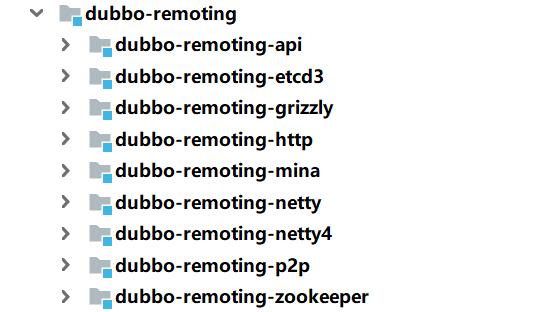
dubbo-remoting-api模块是Dubbo对remoting模块的顶层抽象，里面定义了很多核心接口，其它dubbo-remoting-*子模块都是依赖第三方网络通信框架实现了dubbo-remoting-api模块中的核心接口的。dubbo-remoting-api的模块结构见下图：
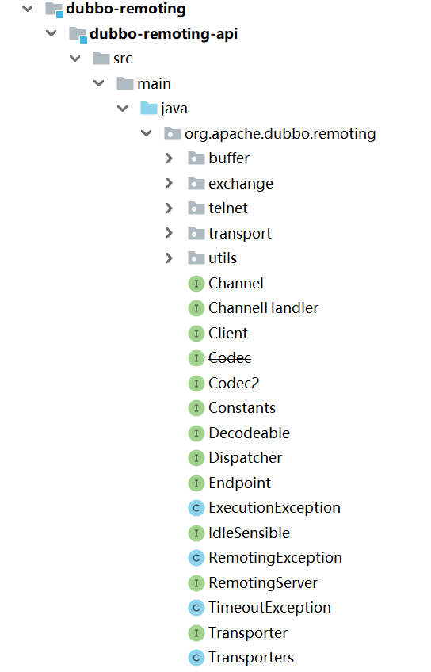
buffer包：定义了缓冲区相关的接口、抽象类及实现类。buffer包在更高的层面，抽象了各个NIO框架的缓冲区，同时也提供了一些基础实现；
exchange包：抽象了Request和Response两个概念，并为其添加很多特性。它们是远程调用非常核心的部分；
transport包：对网络传输层的抽象，只抽象了单向消息的传输，即请求消息由Client端发出，Server端接收；响应消息由Server端发出，Client端接收；
其他接口：Endpoint、Channel、Transporter、Dispatcher等顶层接口放到了
org.apache.dubbo.remoting包下，这些接口是DubboRemoting的核心接口。
Dubbo抽象出以下概念，它们是整个dubbo-remoting-api模块的基础：
端点（Endpoint）：我们可以通过一个IP+PORT唯一确定一个端点，两个端点之间可以建立TCP连接，双向传输数据；
通道（Channel）：Dubbo将Endpoint之间的TCP连接抽象为通道；
客户端（Client）：发起请求的Endpoint称为客户端；
服务端（Server）：接收请求的Endpoint称为服务端。
Endpoint 代表一个端点，Dubbo中 Endpoint 接口的定义如下：
x1public interface Endpoint {2
3 /**4 * 获取关联的URL信息5 */6 URL getUrl();7
8 /**9 * 获取底层 Channel 关联的 ChannelHandler10 */11 ChannelHandler getChannelHandler();12
13 /**14 * 获取 Endpoint 的本地地址15 */16 InetSocketAddress getLocalAddress();17
18 /**19 * 发送数据20 */21 void send(Object message) throws RemotingException;22
23 /**24 * 发送数据25 */26 void send(Object message, boolean sent) throws RemotingException;27
28 /**29 * 关闭底层的 Channel30 */31 void close();32
33 /**34 * 关闭底层的 Channel35 */36 void close(int timeout);37
38 void startClose();39
40 /**41 * 判断底层的 Channel 是否已经关闭42 */43 boolean isClosed();44}Channel是对两个Endpoint连接的抽象，消息发送端会往Channel写入消息，而接收端会从Channel读取消息。从Channel接口的定义可以看出两点：
Channel接口继承了Endpoint接口，也具备开/关状态以及发送数据的能力；
Channel上附加KV属性。
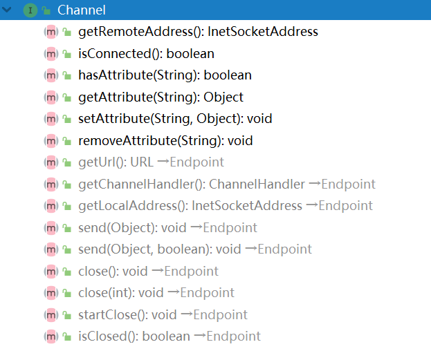
ChannelHandler是注册在Channel上的处理器，Netty中也有类似的抽象。ChannelHandler中可以处理Channel的连接建立/断开事件，还可以处理读取到的数据、发送的数据以及捕获到的异常。
131public interface ChannelHandler {3
4 void connected(Channel channel) throws RemotingException;5
6 void disconnected(Channel channel) throws RemotingException;7
8 void sent(Channel channel, Object message) throws RemotingException;9
10 void received(Channel channel, Object message) throws RemotingException;11
12 void caught(Channel channel, Throwable exception) throws RemotingException;13}ChannelHandler 接口被 @SPI 注解修饰，表示该接口是一个扩展点。
Netty中有一类特殊的ChannelHandler专门负责实现编/解码功能，在dubbo-remoting-api中也有相似的抽象：
141public interface Codec2 {3
4 ({Constants.CODEC_KEY})5 void encode(Channel channel, ChannelBuffer buffer, Object message) throws IOException;6
7 ({Constants.CODEC_KEY})8 Object decode(Channel channel, ChannelBuffer buffer) throws IOException;9
10 // 处理TCP传输的粘包和拆包使用11 enum DecodeResult {12 NEED_MORE_INPUT, SKIP_SOME_INPUT13 }14}Codec2是对整个请求和响应的编解码 。Codec2接口被@SPI接口修饰了，表示该接口是一个扩展接口。同时，其 encode() 方法和 decode() 方法都被 @Adaptive 注解修饰，也就会生成适配器类，根据 URL 中的 codec 值确定具体的扩展实现类。
Client 代表一个客户端（本身也代表了一个Endpoint），继承了Endpoint、 Channel、IdleSensible 等接口，说明它具备读写数据的能力：
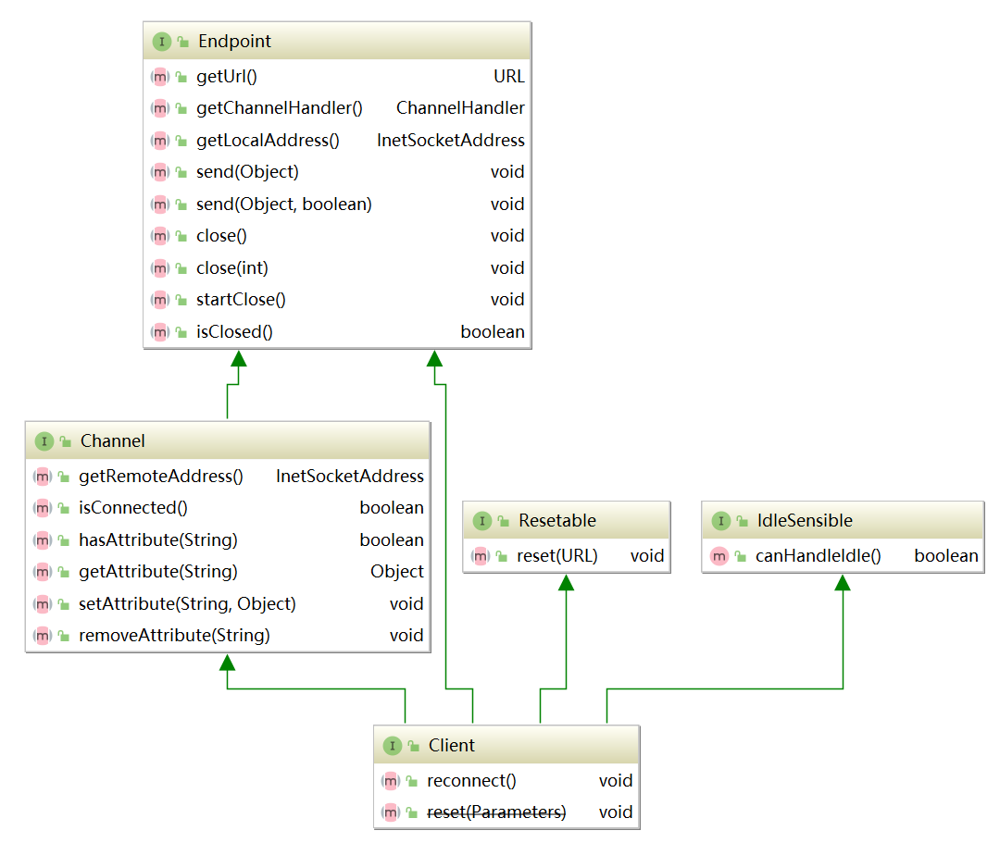
Client代表一个服务端（本身也代表了一个 Endpoint），继承了Endpoin、IdleSensible等接口，说明它具备读写数据的能力：
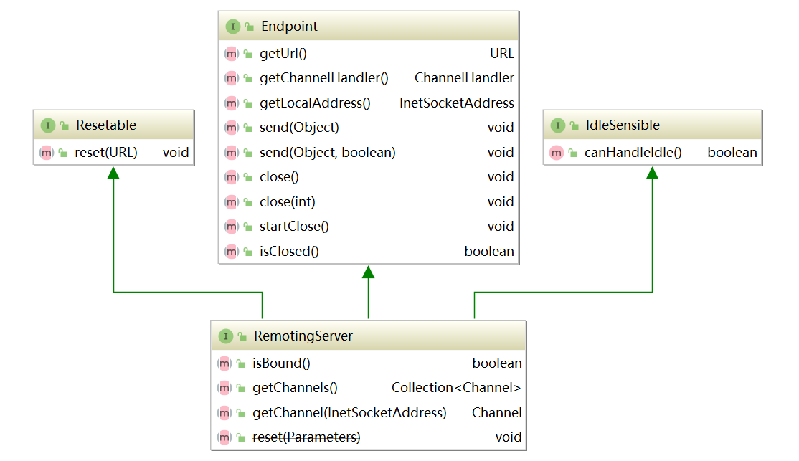
Server可以接收多个Client发起的Channel连接，所以RemotingServer接口中定义了查询Channel的相关方法。
Dubbo在Client和Server之上又封装了一层Transporter接口，其具体定义如下：
271("netty")2public interface Transporter {3
4 /**5 * Bind a server.6 *7 * @param url server url8 * @param handler9 * @return server10 * @throws RemotingException11 * @see org.apache.dubbo.remoting.Transporters#bind(URL, ChannelHandler...)12 */13 ({Constants.SERVER_KEY, Constants.TRANSPORTER_KEY})14 RemotingServer bind(URL url, ChannelHandler handler) throws RemotingException;15
16 /**17 * Connect to a server.18 *19 * @param url server url20 * @param handler21 * @return client22 * @throws RemotingException23 * @see org.apache.dubbo.remoting.Transporters#connect(URL, ChannelHandler...)24 */25 ({Constants.CLIENT_KEY, Constants.TRANSPORTER_KEY})26 Client connect(URL url, ChannelHandler handler) throws RemotingException;27}Transporter接口上有 @SPI 注解，它是一个扩展接口，默认使用“netty”这个扩展名。bind方法上具有@Adaptive 注解，表示会动态生成适配器类，并根据URL中的注解值确定RemotingServer的扩展实现类，connect方法同理。
Dubbo针对每一种支持的网络通信框架，都有一个对应的Transporter 接口实现，具体定义在各个
dubbo-remoting-*实现模块中。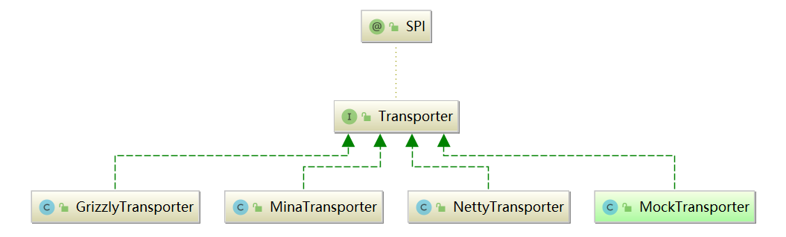
对于RemotingServer和Client，也有对应的实现：
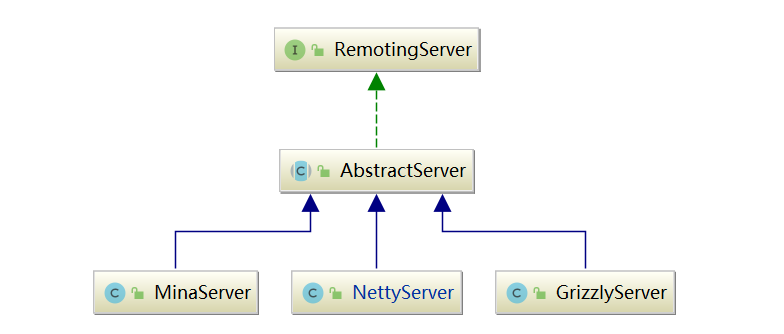
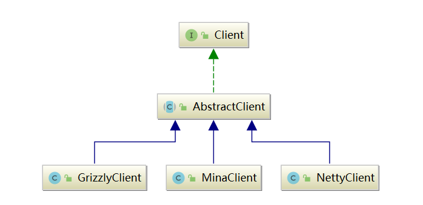
Netty、Mina、Grizzly 这些通信框架的对外接口和使用方式都不一样，如果在上层直接依赖Netty或Grizzly，就依赖了具体的 NIO库实现，而不是依赖一个有传输能力的抽象，后续要切换实现的话，就需要修改依赖和接入的相关代码，非常容易改出 Bug。这也不符合设计模式中的 开闭原则 。
有了Transporter层之后，我们可以通过DubboSPI修改使用的具体Transporter扩展实现，从而切换到不同的Client和RemotingServer实现，达到切换底层通信框架的目的，而且无须修改任何代码。后续引入引入新的通信框架时，也只需要开发相应的
dubbo-remoting-*实现模块，并提供Transporter、Client、RemotingServer等核心接口的实现即可。
Transporters是一个门面类，封装了Transporter对象的创建（通过DubboSPI）以及ChannelHandler的处理，如下所示：
361public class Transporters {2
3 private Transporters() {4 }5
6 public static RemotingServer bind(URL url, ChannelHandler... handlers) throws RemotingException {7 //...8
9 // 将多个 ChannelHandler 封装成一个 ChannelHandlerDispatcher 对象10 ChannelHandler handler;11 if (handlers.length == 1) {12 handler = handlers[0];13 } else {14 handler = new ChannelHandlerDispatcher(handlers);15 }16 return getTransporter().bind(url, handler);17 }18
19 public static Client connect(URL url, ChannelHandler... handlers) throws RemotingException {20 //...21 ChannelHandler handler;22 if (handlers == null || handlers.length == 0) {23 handler = new ChannelHandlerAdapter();24 } else if (handlers.length == 1) {25 handler = handlers[0];26 } else {27 handler = new ChannelHandlerDispatcher(handlers);28 }29 return getTransporter().connect(url, handler);30 }31
32 public static Transporter getTransporter() {33 // 自动生成Transporter适配器并加载34 return ExtensionLoader.getExtensionLoader(Transporter.class).getAdaptiveExtension();35 }36}Transporter在创建Client和RemotingServer时，可以指定多个ChannelHandler，将它们绑定到Channel，这样就可以链式处理其中传输的数据。
ChannelHandlerDispatcher是ChannelHandler接口的实现类，它内部通过一个CopyOnWriteArraySet维护了所有的 ChannelHandler接口实现。
Buffer是一种字节容器，在JavaNIO、Netty等NIO框架中都有类似的设计。例如，JavaNIO中的ByteBuffer、Netty4中的ByteBuf。Dubbo抽象出了ChannelBuffer接口，用于对底层各种不同的NIO框架中的Buffer进行统一，其子类如下图所示：
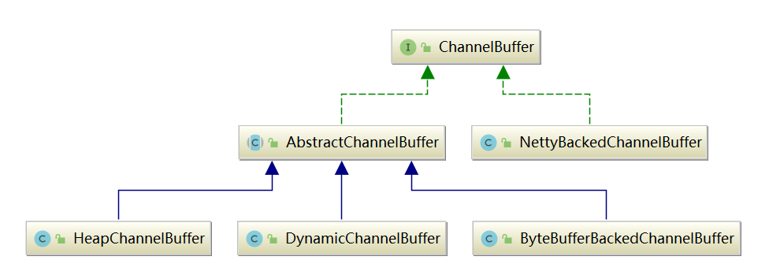
org.apache.dubbo.remoting.buffer包在更高层面上，抽象了各个NIO框架中的缓冲区概念，同时也提供了一些基础实现：
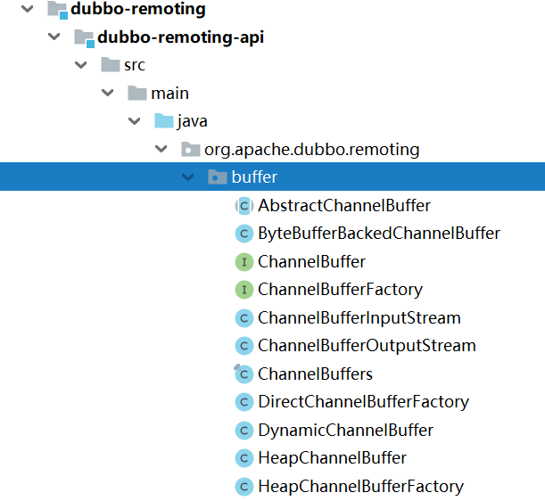
ChannelBuffer接口的设计与Netty4中ByteBuf抽象类的设计基本一致，也有readerIndex和writerIndex指针的概念。
核心方法：大部分方法和Netty中的ByteBuf是类似，都是围绕readerIndex 和 writerIndex 指针展开。
311public interface ChannelBuffer extends Comparable<ChannelBuffer> {2
3 // 从参数指定的位置读取字节（不会修改readerIndex）4 void getBytes(int index, byte[] dst);5
6 // 向参数指定的位置写入字节（不会修改writerIndex）7 void setBytes(int index, byte[] src);8
9 // 从readerIndex指针开始，读取数据到dst，并移动readerIndex指针10 void readBytes(byte[] dst);11
12 // 从src读取数据，并从writerIndex指针位置开始写入，移动writerIndex指针13 void writeBytes(byte[] src);14
15 // 记录当前readerIndex指针，一般会和resetReaderIndex()配合使用16 void markReaderIndex();17
18 // 记录当前writerIndex指针，一般会和resetWriterIndex()配套使用19 void markWriterIndex();20
21 // 返回当前buffer的容量22 int capacity();23
24 // 将readerIndex和writerIndex清零25 void clear();26
27 // 返回创建 ChannelBuffer 的工厂对象28 ChannelBufferFactory factory();29
30 //...31} 用于创建ChannelBuffer的工厂对象，它定义了很多getBuffer()方法重载来创建ChannelBuffer：
81public interface ChannelBufferFactory {2
3 ChannelBuffer getBuffer(int capacity);4
5 ChannelBuffer getBuffer(byte[] array, int offset, int length);6
7 ChannelBuffer getBuffer(ByteBuffer nioBuffer);8}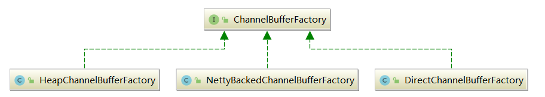
抽象实现类。
四个索引维护
161public abstract class AbstractChannelBuffer implements ChannelBuffer {2// 通过 readBytes() 方法及其重载读取数据时，会后移 readerIndex 索引4private int readerIndex;5// 通过 writeBytes() 方法及其重载写入数据的时候，会后移 writerIndex 索引7private int writerIndex;8// 实现记录以及回滚readerIndex的功能10private int markedReaderIndex;11// 实现记录以及回滚writerIndex的功能13private int markedWriterIndex;14//...16}
AbstractChannelBuffer 的
readBytes()和writeBytes()方法（及其重载）内部会通过 getBytes() 方法和 setBytes() 方法实现数据的读写，这些方法在 AbstractChannelBuffer 子类中实现。以readBytes/writeBytes方法为例201// AbstractChannelBuffer.java2public void readBytes(byte[] dst, int dstIndex, int length) {4// 检测Channel中的可读字节数是否足够5checkReadableBytes(length);6// 将readerIndex之后的length个字节读取到dst数组中 dstIndex~dstIndex+length 的位置8getBytes(readerIndex, dst, dstIndex, length); // 抽象方法，子类实现9// 将readerIndex后移length个字节11readerIndex += length;12}13public void writeBytes(byte[] src, int srcIndex, int length) {15// 将src数组中srcIndex~srcIndex+length的数据写入当前buffer的writerIndex~writerIndex+length的位置16setBytes(writerIndex, src, srcIndex, length); // 抽象方法，子类实现17// 将writeIndex后移length个字节19writerIndex += length;20}
Dubbo在ChannelBuffer的基础上，提供了一套输入输出流，如下图所示：
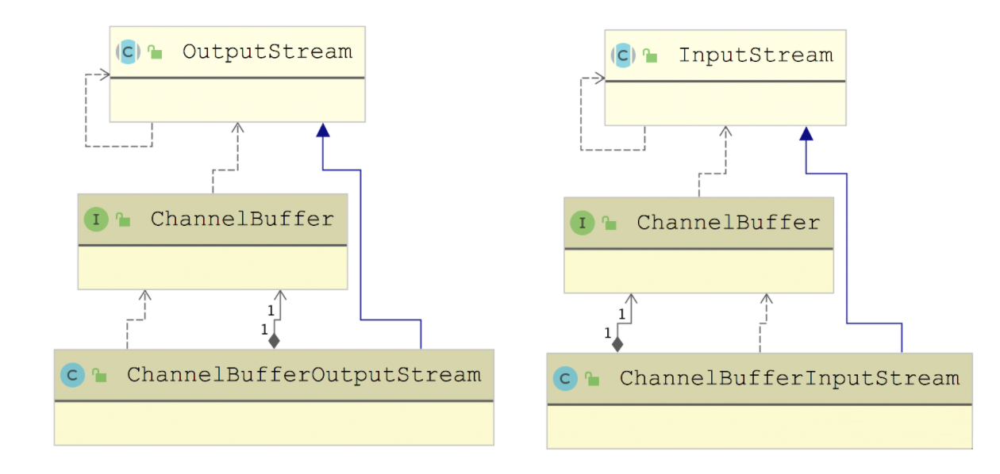
ChannelBufferInputStream内部封装了一个ChannelBuffer，其实现InputStream接口的read()相关方法时，全部委托ChannelBuffer读取数据。ChannelBufferInputStream还维护了一个startIndex索引和endIndex索引，作为读取数据的起止位置。
181public class ChannelBufferInputStream extends InputStream {2
3 private final ChannelBuffer buffer;4 private final int startIndex;5 private final int endIndex;6
7 public int read(byte[] b, int off, int len) throws IOException {8 int available = available();9 if (available == 0) {10 return -1;11 }12
13 len = Math.min(available, len);14 buffer.readBytes(b, off, len);15 return len;16 }17 //...18}ChannelBuffers是一个门面类，包含了创建各类 ChannelBuffer 对象的方法：
81public final class ChannelBuffers {2
3 public static final ChannelBuffer EMPTY_BUFFER = new HeapChannelBuffer(0);4
5 private ChannelBuffers() {6 }7 /...8}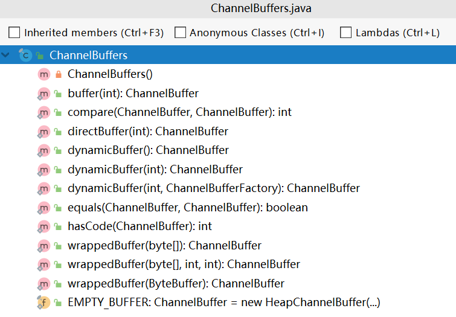
dynamicBuffer()方法：创建DynamicChannelBuffer对象，初始化大小由第一个参数指定，默认为256。
buffer()方法：创建指定大小的HeapChannelBuffer对象。
wrappedBuffer()方法：将传入的byte[]数字封装成HeapChannelBuffer对象。
directBuffer()方法：创建ByteBufferBackedChannelBuffer对象，需要注意的是，底层的ByteBuffer使用的是堆外内存，需要特别关注堆外内存的管理。
ChannelBuffers#equal方法，比较特殊，用于比较两个ChannelBuffer是否相同。该方法会逐个比较两个ChannelBuffer中的前 7个可读字节，只有两者完全一致，才算两个ChannelBuffer相同：
251// ChannelBuffers.java2public static boolean equals(ChannelBuffer bufferA, ChannelBuffer bufferB) {4// 比较两个ChannelBuffer的可读字节数5final int aLen = bufferA.readableBytes();6if (aLen != bufferB.readableBytes()) {7return false;8}9// 只比较前7个字节11final int byteCount = aLen & 7;12int aIndex = bufferA.readerIndex();14int bIndex = bufferB.readerIndex();15for (int i = byteCount; i > 0; i--) {17// 前7个字节存在不同，则返回false18if (bufferA.getByte(aIndex) != bufferB.getByte(bIndex)) {19return false;20}21aIndex++;22bIndex++;23}24return true;25}
ChannelBuffers的compare()方法，用于比较两个ChannelBuffer的大小，会逐个比较两个ChannelBuffer中的全部可读字节，具体实现与equals()方法类似。
HeapChannelBuffer是基于字节数组的ChannelBuffer 实现 ，它内部有一个
array字节数组，用于存储数据：61public class HeapChannelBuffer extends AbstractChannelBuffer {2protected final byte[] array;4//...6}
HeapChannelBuffer的
setBytes()和getBytes()方法都是通过调用System.arraycopy()方法完成数组操作的：91//HeapChannelBuffer.java2public void setBytes(int index, byte[] src, int srcIndex, int length) {4System.arraycopy(src, srcIndex, array, index, length);5}6public void getBytes(int index, byte[] dst, int dstIndex, int length) {8System.arraycopy(array, index, dst, dstIndex, length);9}
HeapChannelBuffer对象的创建是通过工厂类HeapChannelBufferFactory实现的。
HeapChannelBufferFactory.getBuffer()方法的内部通过ChannelBuffers这个工具类，创建一个指定大小的HeapChannelBuffer对象：291// HeapChannelBufferFactory.java2public class HeapChannelBufferFactory implements ChannelBufferFactory {4public ChannelBuffer getBuffer(int capacity) {7// 新建一个HeapChannelBuffer，底层会新建一个长度为capacity的byte数组8return ChannelBuffers.buffer(capacity);9}10public ChannelBuffer getBuffer(byte[] array, int offset, int length) {13// 新建一个HeapChannelBuffer，并且会拷贝array数组中offset~offset+lenght的数据到新HeapChannelBuffer中14return ChannelBuffers.wrappedBuffer(array, offset, length);15}16public ChannelBuffer getBuffer(ByteBuffer nioBuffer) {19if (nioBuffer.hasArray()) {20return ChannelBuffers.wrappedBuffer(nioBuffer);21}22ChannelBuffer buf = getBuffer(nioBuffer.remaining());24int pos = nioBuffer.position();25buf.writeBytes(nioBuffer);26nioBuffer.position(pos);27return buf;28}29}
DynamicChannelBuffer是其它ChannelBuffer的装饰器，它可以为其它ChannelBuffer添加动态扩展容量的功能。
DynamicChannelBuffer 中有两个核心字段：
81public class DynamicChannelBuffer extends AbstractChannelBuffer {2// 默认为 HeapChannelBufferFactory4private final ChannelBufferFactory factory;5// 被修饰的 ChannelBuffer，默认为 HeapChannelBuffer7private ChannelBuffer buffer;8}
DynamicChannelBuffer需要关注的是
ensureWritableBytes()方法，该方法实现了动态扩容的功能，在每次写入数据之前，都需要调用该方法确定当前可用空间是否足够：271// DynamicChannelBuffer.java2public void ensureWritableBytes(int minWritableBytes) {5if (minWritableBytes <= writableBytes()) {6return;7}8int newCapacity;10if (capacity() == 0) {11newCapacity = 1;12} else {13newCapacity = capacity();14}15// 空间扩大为原来的两倍17int minNewCapacity = writerIndex() + minWritableBytes;18while (newCapacity < minNewCapacity) {19newCapacity <<= 1;20}21ChannelBuffer newBuffer = factory().getBuffer(newCapacity);23// 将旧 ChannelBuffer 中的数据拷贝到新 ChannelBuffer 中24newBuffer.writeBytes(buffer, 0, writerIndex());25// 指向新 ChannelBuffer 对象26buffer = newBuffer;27}ensureWritableBytes()方法如果检测到底层ChannelBuffer对象的空间不足，则会创建一个新的ChannelBuffer（空间扩大为原来的两倍），然后将旧ChannelBuffer中的数据拷贝到新ChannelBuffer中，最后将buffer字段指向新ChannelBuffer对象，完成整个扩容操作。
ByteBufferBackedChannelBuffer，是基于JavaNIO中ByteBuffer的ChannelBuffer实现，它的内部通过委托调用ByteBuffer的API实现了ChannelBuffer的接口功能。
以 getBytes() 方法和 setBytes() 方法为例：
291// ByteBufferBackedChannelBuffer.java2public class ByteBufferBackedChannelBuffer extends AbstractChannelBuffer {4// Java NIO中的ByteBuffer5private final ByteBuffer buffer;6private final int capacity;8public void getBytes(int index, byte[] dst, int dstIndex, int length) {10ByteBuffer data = buffer.duplicate();11try {12// 移动ByteBuffer中的指针13data.limit(index + length).position(index);14} catch (IllegalArgumentException e) {15throw new IndexOutOfBoundsException();16}17// 通过ByteBuffer.get()方法实现读取18data.get(dst, dstIndex, length);19}20public void setBytes(int index, byte[] src, int srcIndex, int length) {22ByteBuffer data = buffer.duplicate();23// 移动ByteBuffer中的指针24data.limit(index + length).position(index);25// 将数据写入底层的ByteBuffer中26data.put(src, srcIndex, length);27}28//...29}
NettyBackedChannelBuffer，是基于Netty中ByteBuf的ChannelBuffer实现，Netty中的ByteBuf维护了readerIndex和writerIndex以及markedReaderIndex、markedWriterIndex这四个索引，所以NettyBackedChannelBuffer没有再继承AbstractChannelBuffer抽象类，而是直接实现了ChannelBuffer接口。
131public class NettyBackedChannelBuffer implements ChannelBuffer {2 // Netty 中的ByteBuf3 private ByteBuf buffer;4
5 public void getBytes(int index, byte[] dst, int dstIndex, int length) {6 buffer.getBytes(index, dst, dstIndex, length);7 }8
9 public void setBytes(int index, byte[] src) {10 buffer.setBytes(index, src);11 }12 //...13}
总结：对
dubbo-remoting模块中的org.apache.dubbo.remoting.buffer包中的核心实现进行了讲解。Dubbo底层基于各类网络通信框架完成通信，但是各个框架对于缓冲区的接口及实现都是不同的，所以Dubbo需要在这些框架之上再抽象出一层。ChannelBuffer就是这一抽象层的核心接口，Dubbo提供了ChannelBuffer的多种实现，包括HeapChannelBuffer、DynamicChannelBuffer、ByteBufferBackedChannelBuffer等。
传输层。
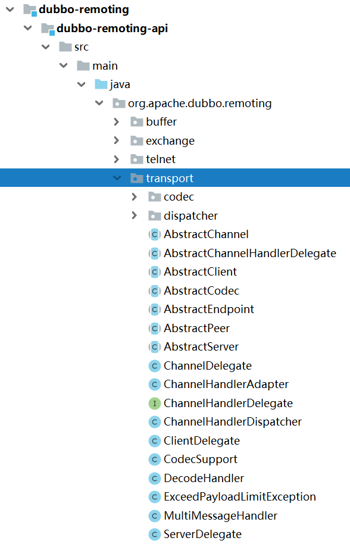
同时实现了Endpoint接口和ChannelHandler接口，是AbstractChannel、AbstractEndpoint抽象类的父类。
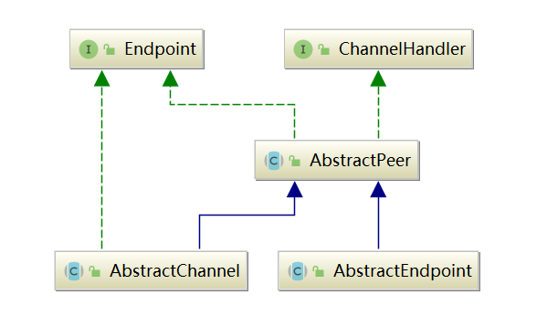
核心字段：
131public abstract class AbstractPeer implements Endpoint, ChannelHandler {2// 内部的ChannelHandler对象，AbstractPeer对ChannelHandler接口的所有实现，都委托给了该对象4private final ChannelHandler handler;5// 表示该端点自身的URL7private volatile URL url;8// 记录当前端点的状态10private volatile boolean closing;11// 记录当前端点的状态12private volatile boolean closed;13}
继承了AbstractPeer抽象类，它是AbstractClient和AbstractServer的父类。
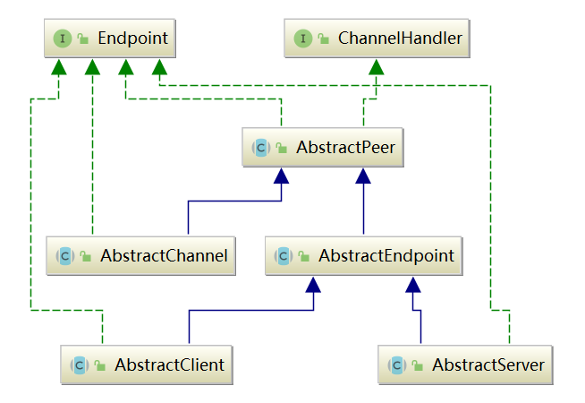
核心字段：内部维护了一个 Codec2 对象和两个超时时间（timeout 字段和 connectTimeout 字段），AbstractEndpoint 的构造方法根据传入的 URL 来初始化这三个字段：
211public abstract class AbstractEndpoint extends AbstractPeer implements Resetable {2private Codec2 codec;4private int timeout;6private int connectTimeout;7public AbstractEndpoint(URL url, ChannelHandler handler) {9super(url, handler);10// 根据URL中的codec参数值，确定具体的Codec2实现类12this.codec = getChannelCodec(url);13// 根据URL中的timeout参数，确定timeout字段值，默认100015this.timeout = url.getPositiveParameter(TIMEOUT_KEY, DEFAULT_TIMEOUT);16// 根据URL中的connect.timeout参数，确定connectTimeout字段值，默认300018this.connectTimeout = url.getPositiveParameter(Constants.CONNECT_TIMEOUT_KEY, Constants.DEFAULT_CONNECT_TIMEOUT);19}20//...21}
Codec2是一个SPI扩展点，上述的
AbstractEndpoint.getChannelCodec()方法就是基于 Dubbo SPI 选择其扩展实现的：131// AbstractEndpoint.java2protected static Codec2 getChannelCodec(URL url) {4// 根据URL的codec参数获取扩展名5String codecName = url.getParameter(Constants.CODEC_KEY, "telnet");6if (ExtensionLoader.getExtensionLoader(Codec2.class).hasExtension(codecName)) {7return ExtensionLoader.getExtensionLoader(Codec2.class).getExtension(codecName);8} else {9// Codec2接口不存在相应的扩展名，就尝试从Codec这个老接口的扩展名中查找，目前Codec接口已经废弃10return new CodecAdapter(ExtensionLoader.getExtensionLoader(Codec.class)11.getExtension(codecName));12}13}
AbstractEndpoint还实现了
Resetable接口（只有一个reset()方法），AbstractEndpoint的reset()方法逻辑非常简单，就是根据传入的URL参数重置AbstractEndpoint的三个字段：381// AbstractEndpoint.java2public void reset(URL url) {4// 检测当前AbstractEndpoint是否已经关闭(略)5if (isClosed()) {6throw new IllegalStateException("Failed to reset parameters "7+ url + ", cause: Channel closed. channel: " + getLocalAddress());8}9// 重置timeout10try {11if (url.hasParameter(TIMEOUT_KEY)) {12int t = url.getParameter(TIMEOUT_KEY, 0);13if (t > 0) {14this.timeout = t;15}16}17} catch (Throwable t) {18logger.error(t.getMessage(), t);19}20// 重置connectTimeout21try {22if (url.hasParameter(Constants.CONNECT_TIMEOUT_KEY)) {23int t = url.getParameter(Constants.CONNECT_TIMEOUT_KEY, 0);24if (t > 0) {25this.connectTimeout = t;26}27}28} catch (Throwable t) {29logger.error(t.getMessage(), t);30}31try {32if (url.hasParameter(Constants.CODEC_KEY)) {33this.codec = getChannelCodec(url);34}35} catch (Throwable t) {36logger.error(t.getMessage(), t);37}38}
AbstractChannel 也继承了 AbstractPeer 抽象类，同时还继承了 Channel 接口：
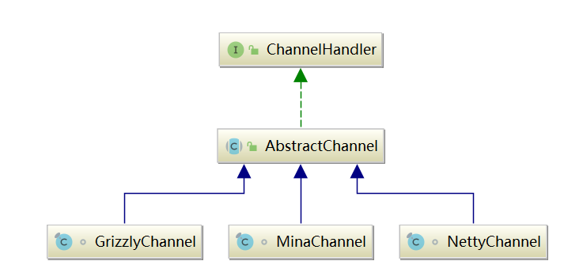
AbstractChannel的实现非常简单，只是在send()方法中检测底层连接的状态，没有实现具体发送消息的逻辑：
131public abstract class AbstractChannel extends AbstractPeer implements Channel {2
3 public AbstractChannel(URL url, ChannelHandler handler) {4 super(url, handler);5 }6
7 8 public void send(Object message, boolean sent) throws RemotingException {9 if (isClosed()) {10 // ...抛出异常11 }12 }13}这里我以 Netty 4 的实现—— NettyChannel 为例，分析它对 AbstractChannel 的实现：
411final class NettyChannel extends AbstractChannel {2 // Netty Channel 与 Dubbo Channel 对象一一对应3 private static final ConcurrentMap<Channel, NettyChannel> CHANNEL_MAP = new ConcurrentHashMap<Channel, NettyChannel>();4
5 // 底层的Netty Channel6 private final Channel channel;7
8 // 当前 Channel 中的附加属性，都会记录到该 Map 中9 private final Map<String, Object> attributes = new ConcurrentHashMap<String, Object>();10
11 // 标识当前 Channel 是否可用12 private final AtomicBoolean active = new AtomicBoolean(false);13
14 public void send(Object message, boolean sent) throws RemotingException {15 // 调用AbstractChannel的send()方法，检测连接是否可用16 super.send(message, sent);17
18 boolean success = true;19 int timeout = 0;20 try {21 // 依赖Netty框架的Channel发送数据22 ChannelFuture future = channel.writeAndFlush(message);23 if (sent) { // 等待发送结束，有超时时间24 timeout = getUrl().getPositiveParameter(TIMEOUT_KEY, DEFAULT_TIMEOUT);25 success = future.await(timeout);26 }27 // 异常28 Throwable cause = future.cause();29 if (cause != null) {30 throw cause;31 }32 } catch (Throwable e) {33 // 在底层连接断开时，删除缓存的底层Channel34 removeChannelIfDisconnected(channel);35 throw new RemotingException(this, "Failed to send message " + PayloadDropper.getRequestWithoutData(message) + " to " + getRemoteAddress() + ", cause: " + e.getMessage(), e);36 }37 if (!success) {38 throw new RemotingException(this, "Failed to send message " + PayloadDropper.getRequestWithoutData(message) + " to " + getRemoteAddress() + "in timeout(" + timeout + "ms) limit");39 }40 }41}AbstractServer 是对服务端的抽象，实现了服务端的公共逻辑 。它继承了 AbstractEndpoint 抽象类，同时还实现了 RemotingServer 接口，如下图所示：
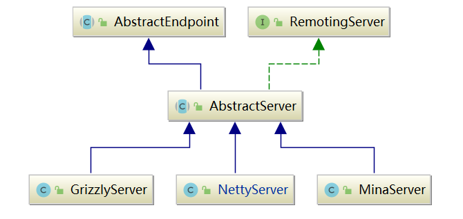
核心字段：
221public abstract class AbstractServer extends AbstractEndpoint implements RemotingServer {2// Server的本地地址4private InetSocketAddress localAddress;5// Server的绑定地址7private InetSocketAddress bindAddress;8// Server能接收的最大连接数，从URL的 accepts 参数中获取，默认值0，表示没有限制10private int accepts;11// 连接空闲时间13private int idleTimeout;14// 负责管理线程池，ExecutorRepository是一个SPI扩展点16private ExecutorRepository executorRepository = ExtensionLoader.getExtensionLoader(ExecutorRepository.class).getDefaultExtension();17// 当前Server关联的线程池，由ExecutorRepository创建并管理19ExecutorService executor;20protected static final String SERVER_THREAD_POOL_NAME = "DubboServerHandler";22}
构造方法：在AbstractServer的构造方法中，会根据传入的URL初始化上述字段，并调用
doOpen()这个抽象方法完成 Server 的启动：251// AbstractServer.java2public AbstractServer(URL url, ChannelHandler handler) throws RemotingException {4super(url, handler);5localAddress = getUrl().toInetSocketAddress();7String bindIp = getUrl().getParameter(Constants.BIND_IP_KEY, getUrl().getHost());8int bindPort = getUrl().getParameter(Constants.BIND_PORT_KEY, getUrl().getPort());9if (url.getParameter(ANYHOST_KEY, false) || NetUtils.isInvalidLocalHost(bindIp)) {10bindIp = ANYHOST_VALUE;11}12bindAddress = new InetSocketAddress(bindIp, bindPort);13this.accepts = url.getParameter(ACCEPTS_KEY, DEFAULT_ACCEPTS);14this.idleTimeout = url.getParameter(IDLE_TIMEOUT_KEY, DEFAULT_IDLE_TIMEOUT);15try {16// ---往下看---17// 启动Server，抽象方法，由子类实现18doOpen();19// ---end---20} catch (Throwable t) {21throw new RemotingException(url.toInetSocketAddress(), null, "Failed to bind " + getClass().getSimpleName() + " on " + getLocalAddress() + ", cause: " + t.getMessage(), t);22}23// 获取该Server关联的线程池24executor = executorRepository.createExecutorIfAbsent(url);25}
以NettyServer为例，我们来看看doOpen方法，其实就是基于Netty API完成Server的启动：
661// NettyServer.java2
3public class NettyServer extends AbstractServer {4
5 private Map<String, Channel> channels;6
7 private ServerBootstrap bootstrap;8
9 private io.netty.channel.Channel channel;10
11 private EventLoopGroup bossGroup;12 private EventLoopGroup workerGroup;13
14 protected void doOpen() throws Throwable {15 // 创建ServerBootstrap16 bootstrap = new ServerBootstrap();17 // 创建boss EventLoopGroup18 bossGroup = NettyEventLoopFactory.eventLoopGroup(1, "NettyServerBoss");19 // 创建worker EventLoopGroup20 workerGroup = NettyEventLoopFactory.eventLoopGroup(21 getUrl().getPositiveParameter(IO_THREADS_KEY, Constants.DEFAULT_IO_THREADS),22 "NettyServerWorker");23
24 // 创建NettyServerHandler，它是一个Netty中的ChannelHandler实现25 // 注意这里将NettyServer作为Dubbo ChannelHandler26 final NettyServerHandler nettyServerHandler = new NettyServerHandler(getUrl(), this);27
28 // 获取当前NettyServer创建的所有Netty Channel29 channels = nettyServerHandler.getChannels();30
31 // 初始化ServerBootstrap32 bootstrap.group(bossGroup, workerGroup)33 .channel(NettyEventLoopFactory.serverSocketChannelClass())34 .option(ChannelOption.SO_REUSEADDR, Boolean.TRUE)35 .childOption(ChannelOption.TCP_NODELAY, Boolean.TRUE)36 .childOption(ChannelOption.ALLOCATOR, PooledByteBufAllocator.DEFAULT)37 .childHandler(new ChannelInitializer<SocketChannel>() {38 39 protected void initChannel(SocketChannel ch) throws Exception {40 // 连接空闲超时时间41 int idleTimeout = UrlUtils.getIdleTimeout(getUrl());42 // NettyCodecAdapter中会创建Decoder和Encoder43 NettyCodecAdapter adapter = new NettyCodecAdapter(getCodec(), getUrl(), NettyServer.this);44 if (getUrl().getParameter(SSL_ENABLED_KEY, false)) {45 ch.pipeline().addLast("negotiation",46 SslHandlerInitializer.sslServerHandler(getUrl(), nettyServerHandler));47 }48
49 ch.pipeline()50 // 注册Decoder51 .addLast("decoder", adapter.getDecoder()) 52 // 注册Encoder53 .addLast("encoder", adapter.getEncoder())54 // 注册IdleStateHandler，用于心跳和空闲长连接处理55 .addLast("server-idle-handler", new IdleStateHandler(0, 0, idleTimeout, MILLISECONDS))56 // 注册NettyServerHandler57 .addLast("handler", nettyServerHandler);58 }59 });60
61 // 绑定本地Server地址并启动62 ChannelFuture channelFuture = bootstrap.bind(getBindAddress());63 channelFuture.syncUninterruptibly();64 channel = channelFuture.channel();65 }66}Server的启动过程中，关键是在Netty Channel中注册的四个ChannelHandler：
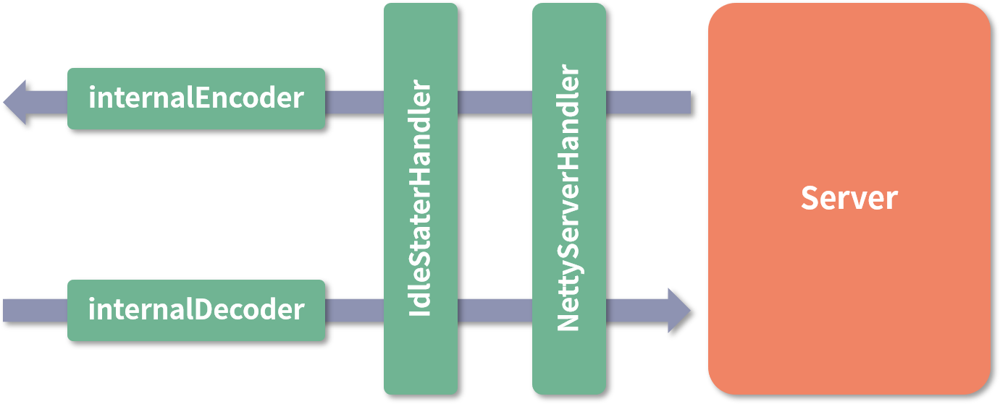
InternalEncoder：是NettyCodecAdapter的内部类，它继承了Netty中的MessageToByteEncoder。InternalEncoder会将真正的编码功能委托给NettyServer内部的Codec2对象去处理：
181// NettyCodecAdapter.InternalEncoder.java2private class InternalEncoder extends MessageToByteEncoder {4protected void encode(ChannelHandlerContext ctx, Object msg, ByteBuf out) throws Exception {7// 将Netty ByteBuf封装成统一的ChannelBuffer8org.apache.dubbo.remoting.buffer.ChannelBuffer buffer = new NettyBackedChannelBuffer(out);9// 拿到关联的Netty Channel11Channel ch = ctx.channel();12NettyChannel channel = NettyChannel.getOrAddChannel(ch, url, handler);14// 编码16codec.encode(channel, buffer, msg);17}18}
InternalDecoder：也是NettyCodecAdapter的内部类，它继承了Netty中的ByteToMessageDecoder。InternalDecoder会将真正的解码功能委托给NettyServer内部的Codec2对象去处理。
331private class InternalDecoder extends ByteToMessageDecoder {2protected void decode(ChannelHandlerContext ctx, ByteBuf input, List<Object> out) throws Exception {5// 将Netty ByteBuf封装成统一的ChannelBuffer7ChannelBuffer message = new NettyBackedChannelBuffer(input);8// 拿到关联的Netty Channel10NettyChannel channel = NettyChannel.getOrAddChannel(ctx.channel(), url, handler);11do {13// 记录当前readerIndex的位置14int saveReaderIndex = message.readerIndex();15// 委托给Codec2进行解码16Object msg = codec.decode(channel, message);17// 当前接收到的数据不足一个消息的长度，会返回NEED_MORE_INPUT18if (msg == Codec2.DecodeResult.NEED_MORE_INPUT) {19// 重置readerIndex20message.readerIndex(saveReaderIndex);21break;22} else {23if (saveReaderIndex == message.readerIndex()) {24throw new IOException("Decode without read data.");25}26// 将读取到的消息传递给后面的Handler处理27if (msg != null) {28out.add(msg);29}30}31} while (message.readable());32}33}
IdleStateHandler：是Netty提供的一个工具ChannelHandler，用于定时心跳以及关闭空闲长连接，简单介绍下IdleStateHandler的工作流程：
首先，IdleStateHandler 会通过
lastReadTime、lastWriteTime等几个字段，记录了最近一次读/写事件的时间；IdleStateHandler 初始化时，会创建一个定时任务，定时检测当前时间与最后一次读/写时间的差值，如果超过我们设置的阈值（也就是上面 AbstractServer 中设置的
idleTimeout），就会触发 IdleStateEvent 事件；IdleStateEvent 事件会根据Netty Channel传播链，传递给后续的 ChannelHandler 进行处理，后续 ChannelHandler 的
userEventTriggered()方法会根据接收到的 IdleStateEvent 事件，决定是关闭空闲长连接，还是发送心跳探活。
NettyServerHandler：它继承了Netty中的 ChannelDuplexHandler，也就是说可以同时处理 Inbound 数据和 Outbound 数据。在 NettyServerHandler 中有
channels和handler两个核心字段：231.netty.channel.ChannelHandler.Sharable2public class NettyServerHandler extends ChannelDuplexHandler {3// 保存了当前Server创建的所有 Channel5private final Map<String, Channel> channels = new ConcurrentHashMap<String, Channel>();6// 这个handler就是NettyServer8// NettyServerHandler中的几乎所有方法都会触发该对象的方法执行9private final ChannelHandler handler;10public NettyServerHandler(URL url, ChannelHandler handler) {12if (url == null) {13throw new IllegalArgumentException("url == null");14}15if (handler == null) {16throw new IllegalArgumentException("handler == null");17}18this.url = url;19// handler是在NettyServer.doOpen()方法中创建的20this.handler = handler;21}22//...23}
以write方法为例，对NettyServerHandler的处理流程进行简单分析：
81// NettyServerHandler.java2public void write(ChannelHandlerContext ctx, Object msg, ChannelPromise promise) throws Exception {4// 将发送的数据继续向下传递5super.write(ctx, msg, promise);6NettyChannel channel = NettyChannel.getOrAddChannel(ctx.channel(), url, handler);7handler.sent(channel, msg);8}从 AbstractPeer 开始往下，一路继承下来，NettyServer 拥有了 Endpoint、ChannelHandler 以及RemotingServer多个接口的能力，关联了一个 ChannelHandler 对象以及 Codec2 对象，并最终将数据委托给这两个对象进行处理。
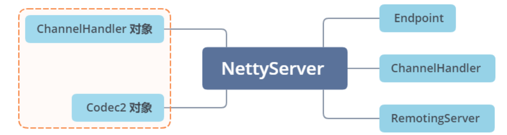
AbstractServer中有一个ExecutorRepository类，它负责创建并管理 Dubbo 中的线程池，该接口虽然是个 SPI 扩展点，但是只有一个默认实现—— DefaultExecutorRepository ：
211("default")2public interface ExecutorRepository {3
4 // 根据 URL 参数，创建相应的线程池5 ExecutorService createExecutorIfAbsent(URL url);6
7 // 根据 URL 参数，查询相应的线程池8 ExecutorService getExecutor(URL url);9
10 // 根据 URL 参数，更新线程池的属性，比如coreSize, maxSize, ...11 void updateThreadpool(URL url, ExecutorService executor);12
13 // 获取调度线程池14 ScheduledExecutorService nextScheduledExecutor();15
16 // 获取调度线程池17 ScheduledExecutorService getServiceExporterExecutor();18
19 // 获取默认的共享线程池20 ExecutorService getSharedExecutor();21}DefaultExecutorRepository：中维护了一个ConcurrentMap<String, ConcurrentMap<Integer, ExecutorService>> 集合，缓存了已有的线程池：
第一层 Key 值：表示线程池属于 Provider 端还是 Consumer 端；
第二层 Key 值：表示线程池关联服务的端口。
161public class DefaultExecutorRepository implements ExecutorRepository {2 // 根据CPU核数，计算默认的线程数3 private int DEFAULT_SCHEDULER_SIZE = Runtime.getRuntime().availableProcessors();4
5 private final ExecutorService SHARED_EXECUTOR = Executors.newCachedThreadPool(new NamedThreadFactory("DubboSharedHandler", true));6
7 private Ring<ScheduledExecutorService> scheduledExecutors = new Ring<>();8
9 private ScheduledExecutorService serviceExporterExecutor;10
11 private ScheduledExecutorService reconnectScheduledExecutor;12
13 // 缓存已有的线程池14 private ConcurrentMap<String, ConcurrentMap<Integer, ExecutorService>> data = new ConcurrentHashMap<>();15 //...16}
DefaultExecutorRepository.createExecutorIfAbsent()方法会根据URL参数，创建相应的线程池并缓存在合适的位置：221// DefaultExecutorRepository.java2public synchronized ExecutorService createExecutorIfAbsent(URL url) {4// 根据URL中的side参数值决定第一层key，即判断是Consumer还是Provider5String componentKey = EXECUTOR_SERVICE_COMPONENT_KEY;6if (CONSUMER_SIDE.equalsIgnoreCase(url.getParameter(SIDE_KEY))) {7componentKey = CONSUMER_SIDE;8}9Map<Integer, ExecutorService> executors = data.computeIfAbsent(componentKey, k -> new ConcurrentHashMap<>());11// 根据URL中的port值确定第二层key13Integer portKey = url.getPort();14ExecutorService executor = executors.computeIfAbsent(portKey, k -> createExecutor(url));15// 如果缓存中相应的线程池已关闭，则同样需要调用createExecutor()方法创建新的线程池，并替换掉缓存中已关闭的线程持16if (executor.isShutdown() || executor.isTerminated()) {17executors.remove(portKey);18executor = createExecutor(url);19executors.put(portKey, executor);20}21return executor;22}
在上述的 DefaultExecutorRepository.createExecutor() 方法中，会通过 Dubbo SPI 查找 ThreadPool 接口的扩展实现，并调用其 getExecutor() 方法创建线程池：
51// DefaultExecutorRepository.java2
3private ExecutorService createExecutor(URL url) {4 return (ExecutorService) ExtensionLoader.getExtensionLoader(ThreadPool.class).getAdaptiveExtension().getExecutor(url);5}ThreadPool 接口被 @SPI 注解修饰，默认使用 FixedThreadPool 实现。同时，ThreadPool 接口中的 getExecutor() 方法被 @Adaptive 注解修饰，动态生成的适配器类会优先根据 URL 中的 threadpool 参数选择 ThreadPool 的扩展实现：
51("fixed")2public interface ThreadPool {3 ({THREADPOOL_KEY})4 Executor getExecutor(URL url);5}ThreadPool 有很多实现类，如下图，不同实现会根据 URL 参数创建不同特性的线程池：
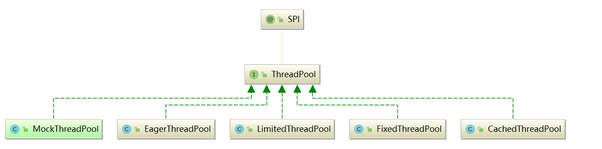
以 CacheThreadPool 为例：
211public class CachedThreadPool implements ThreadPool {2public Executor getExecutor(URL url) {5String name = url.getParameter(THREAD_NAME_KEY, DEFAULT_THREAD_NAME);6// 核心线程数7int cores = url.getParameter(CORE_THREADS_KEY, DEFAULT_CORE_THREADS);8// 最大线程数9int threads = url.getParameter(THREADS_KEY, Integer.MAX_VALUE);10// 队列深度11int queues = url.getParameter(QUEUES_KEY, DEFAULT_QUEUES);12// 非核心线程的最大空闲时长，当非核心线程空闲时间超过该值时，会被回收13int alive = url.getParameter(ALIVE_KEY, DEFAULT_ALIVE);、14// 创建线程池15return new ThreadPoolExecutor(cores, threads, alive, TimeUnit.MILLISECONDS,16queues == 0 ? new SynchronousQueue<Runnable>() :17(queues < 0 ? new LinkedBlockingQueue<Runnable>()18: new LinkedBlockingQueue<Runnable>(queues)),19new NamedInternalThreadFactory(name, true), new AbortPolicyWithReport(name, url));20}21}
在 ThreadPool 的子类中， LimitedThreadPool 、 FixedThreadPool 、 CacheThreadPool 均基于 JDK ThreadPoolExecutor 线程池实现，在核心线程全部被占用时，会优先将任务放到缓冲队列中缓存，在缓冲队列满了之后，才会尝试创建新线程来处理任务。
最特殊的是 EagerThreadPool ，底层是一个EagerThreadPoolExecutor线程池，它是Dubbo自己实现的一个特殊线程池（继承了ThreadPoolExecutor）：
231public class EagerThreadPool implements ThreadPool {2public Executor getExecutor(URL url) {5String name = url.getParameter(THREAD_NAME_KEY, DEFAULT_THREAD_NAME);6int cores = url.getParameter(CORE_THREADS_KEY, DEFAULT_CORE_THREADS);7int threads = url.getParameter(THREADS_KEY, Integer.MAX_VALUE);8int queues = url.getParameter(QUEUES_KEY, DEFAULT_QUEUES);9int alive = url.getParameter(ALIVE_KEY, DEFAULT_ALIVE);10// TaskQueue继承自LinkedBlockingQueue12TaskQueue<Runnable> taskQueue = new TaskQueue<Runnable>(queues <= 0 ? 1 : queues);13EagerThreadPoolExecutor executor = new EagerThreadPoolExecutor(cores,14threads,15alive,16TimeUnit.MILLISECONDS,17taskQueue,18new NamedInternalThreadFactory(name, true),19new AbortPolicyWithReport(name, url));20taskQueue.setExecutor(executor);21return executor;22}23}EagerThreadPoolExecutor的特点是： 在线程数没有达到最大线程数的前提下，EagerThreadPoolExecutor 会优先创建线程来执行任务，而不是放到缓冲队列中；当线程数达到最大值时，EagerThreadPoolExecutor 会将任务放入缓冲队列，等待空闲线程 。
EagerThreadPoolExecutor 覆盖了 ThreadPoolExecutor 中的两个方法：execute() 方法和 afterExecute() 方法，具体实现如下：
481public class EagerThreadPoolExecutor extends ThreadPoolExecutor {2// 当前在线程池中的任务总数：正在线执行的任务数 + 缓冲队列中等待的任务数3private final AtomicInteger submittedTaskCount = new AtomicInteger(0);4public EagerThreadPoolExecutor(int corePoolSize,6int maximumPoolSize,7long keepAliveTime,8TimeUnit unit, TaskQueue<Runnable> workQueue,9ThreadFactory threadFactory,10RejectedExecutionHandler handler) {11super(corePoolSize, maximumPoolSize, keepAliveTime, unit, workQueue, threadFactory, handler);12}13protected void afterExecute(Runnable r, Throwable t) {16// 任务执行结束，递减submittedTaskCount17submittedTaskCount.decrementAndGet();18}19public void execute(Runnable command) {22if (command == null) {23throw new NullPointerException();24}25// 任务提交前，递增submittedTaskCount26submittedTaskCount.incrementAndGet();27try {28// 提交任务29super.execute(command);30} catch (RejectedExecutionException rx) { // 任务被拒绝31final TaskQueue queue = (TaskQueue) super.getQueue();32try {33// 尝试再次放入队列中缓存，等待空闲线程执行34if (!queue.retryOffer(command, 0, TimeUnit.MILLISECONDS)) {35// 再次入队被拒绝，则队列已满，无法执行任务36submittedTaskCount.decrementAndGet();37throw new RejectedExecutionException("Queue capacity is full.", rx);38}39} catch (InterruptedException x) { // 再次入队列异常40submittedTaskCount.decrementAndGet();41throw new RejectedExecutionException(x);42}43} catch (Throwable t) { // 任务提交异常44submittedTaskCount.decrementAndGet();45throw t;46}47}48}
优先创建线程执行任务的逻辑其实是包含在TaskQueue中，它覆写了 LinkedBlockingQueue.offer() 方法，会判断线程池的
submittedTaskCount值是否已经达到最大线程数，如果未超过，则会返回 false，迫使线程池创建新线程来执行任务：271public class TaskQueue<R extends Runnable> extends LinkedBlockingQueue<Runnable> {2private EagerThreadPoolExecutor executor;4public boolean offer(Runnable runnable) {7if (executor == null) {8throw new RejectedExecutionException("The task queue does not have executor!");9}10// 获取当前线程池中的活跃线程数12int currentPoolThreadSize = executor.getPoolSize();13// 有线程空闲，直接将任务提交到队列中，空闲线程会直接从队列中获取任务执行15if (executor.getSubmittedTaskCount() < currentPoolThreadSize) {16return super.offer(runnable);17}18// 没有空闲线程，但还可以创建新线程，则返回false，迫使线程池创建新线程来执行任务20if (currentPoolThreadSize < executor.getMaximumPoolSize()) {21return false;22}23// 当前线程数已经达到上限，只能放到队列中缓存了25return super.offer(runnable);26}27}
EagerThreadPoolExecutor线程池最后一个相关的小细节是 AbortPolicyWithReport ，它继承了
ThreadPoolExecutor.AbortPolicy，覆写的 rejectedExecution 方法会输出包含线程池相关信息的 WARN 级别日志，然后执行dumpJStack()方法输出堆栈信息，最后再抛出RejectedExecutionException 异常：161// AbortPolicyWithReport.java2public void rejectedExecution(Runnable r, ThreadPoolExecutor e) {4String msg = String.format("Thread pool is EXHAUSTED!" +5" Thread Name: %s, Pool Size: %d (active: %d, core: %d, max: %d, largest: %d), Task: %d (completed: "6+ "%d)," +7" Executor status:(isShutdown:%s, isTerminated:%s, isTerminating:%s), in %s://%s:%d!",8threadName, e.getPoolSize(), e.getActiveCount(), e.getCorePoolSize(), e.getMaximumPoolSize(),9e.getLargestPoolSize(),10e.getTaskCount(), e.getCompletedTaskCount(), e.isShutdown(), e.isTerminated(), e.isTerminating(),11url.getProtocol(), url.getIp(), url.getPort());12logger.warn(msg);13dumpJStack();14dispatchThreadPoolExhaustedEvent(msg);15throw new RejectedExecutionException(msg);16}
AbstractClient，是对客户端的抽象，和AbstractServer一样，继承自AbstractEndpoint抽象类：
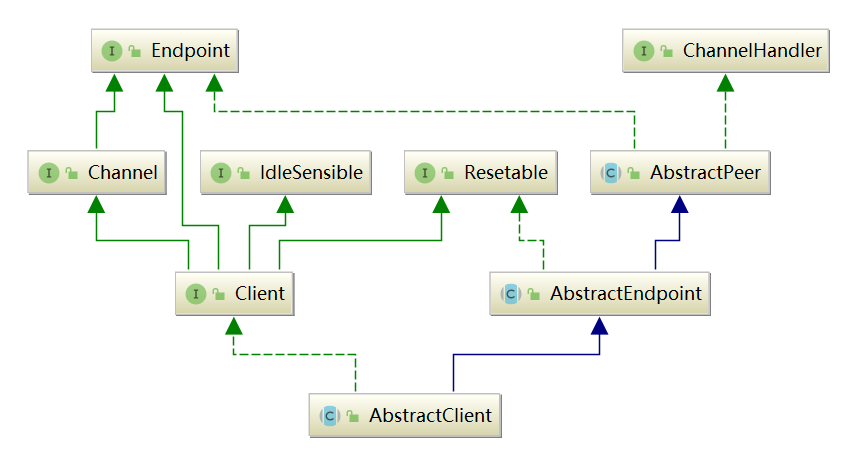
核心字段：
131public abstract class AbstractClient extends AbstractEndpoint implements Client {2protected static final String CLIENT_THREAD_POOL_NAME = "DubboClientHandler";3// Client底层进行连接、断开、重连等操作时，需要先获取锁5private final Lock connectLock = new ReentrantLock();6// 发送数据前，会检查Client底层的连接是否断开，如果已断开，则根据needReconnect字段决定是否重连8private final boolean needReconnect;9// 当前Client关联的线程池11protected volatile ExecutorService executor;12private ExecutorRepository executorRepository = ExtensionLoader.getExtensionLoader(ExecutorRepository.class).getDefaultExtension();13}构造器：会解析 URL 并根据参数值初始化
needReconnect字段和executor字段：611// AbstractClient.java2public AbstractClient(URL url, ChannelHandler handler) throws RemotingException {4super(url, handler);5// 是否重连7needReconnect = url.getParameter(Constants.SEND_RECONNECT_KEY, false);8// 初始化线程池10initExecutor(url);11try {13// // 初始化底层的NIO库的相关组件，抽象方法，由子类实现14doOpen();15} catch (Throwable t) {16close();17throw new RemotingException(url.toInetSocketAddress(), null,18"Failed to start " + getClass().getSimpleName() + " " + NetUtils.getLocalAddress() + " connect to the server " + getRemoteAddress() + ", cause: " + t.getMessage(), t);19}20try {21// 与客户端建立连接22connect();23} catch (RemotingException t) {24if (url.getParameter(Constants.CHECK_KEY, true)) {25// 关闭连接26close();27throw t;28} else {29//...30}31} catch (Throwable t) {32close();33throw new RemotingException(url.toInetSocketAddress(), null,34"Failed to start " + getClass().getSimpleName() + " " + NetUtils.getLocalAddress() + " connect to the server " + getRemoteAddress() + ", cause: " + t.getMessage(), t);35}36}37protected void connect() throws RemotingException {39connectLock.lock();40try {41if (isConnected()) {42return;43}44// 抽象方法，由子类实现45doConnect();46if (!isConnected()) {48// ...省略抛出异常49} else {50// ...省略日志51}52} catch (RemotingException e) {53throw e;54} catch (Throwable e) {55throw new RemotingException(this, "Failed connect to server " + getRemoteAddress() + " from " + getClass().getSimpleName() + " " + NetUtils.getLocalHost() + " using dubbo version " + Version.getVersion()56+ ", cause: " + e.getMessage(), e);57} finally {58connectLock.unlock();59}60}61//...与 AbstractServer 类似，AbstractClient 定义了
doOpen()、doClose()、doConnect()和doDisConnect()四个抽象方法给子类实现。NettyClient的子类继承图如下：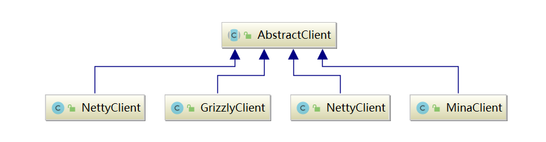
NettyClient 的 doOpen() 方法，内部基于Netty的 Bootstrap 构建客户端，其中会完成连接超时时间、keepalive 等参数的设置，以及 ChannelHandler 的创建和注册：
591// NettyClient.java2
3public class NettyClient extends AbstractClient {4
5 // Netty线程池6 private static final EventLoopGroup NIO_EVENT_LOOP_GROUP = eventLoopGroup(Constants.DEFAULT_IO_THREADS, "NettyClientWorker");7
8 private static final String SOCKS_PROXY_HOST = "socksProxyHost";9 private static final String SOCKS_PROXY_PORT = "socksProxyPort";10 private static final String DEFAULT_SOCKS_PROXY_PORT = "1080";11
12 // 客户端Netty Bootstrap13 private Bootstrap bootstrap;14
15 // 当前与Server建立的Netty Channel连接16 private volatile Channel channel;17
18 protected void doOpen() throws Throwable {19 // 创建一个NettyClientHandler对象20 final NettyClientHandler nettyClientHandler = new NettyClientHandler(getUrl(), this);21
22 // 创建并装配Bootstrap23 bootstrap = new Bootstrap();24 bootstrap.group(NIO_EVENT_LOOP_GROUP)25 .option(ChannelOption.SO_KEEPALIVE, true)26 .option(ChannelOption.TCP_NODELAY, true)27 .option(ChannelOption.ALLOCATOR, PooledByteBufAllocator.DEFAULT)28 .channel(socketChannelClass());29 // 设置连接超时时间，这里使用到AbstractEndpoint中的connectTimeout字段30 bootstrap.option(ChannelOption.CONNECT_TIMEOUT_MILLIS, Math.max(3000, getConnectTimeout()));31
32 bootstrap.handler(new ChannelInitializer<SocketChannel>() {33 34 protected void initChannel(SocketChannel ch) throws Exception {35 // 心跳请求的时间间隔36 int heartbeatInterval = UrlUtils.getHeartbeat(getUrl());37
38 if (getUrl().getParameter(SSL_ENABLED_KEY, false)) {39 ch.pipeline().addLast("negotiation", SslHandlerInitializer.sslClientHandler(getUrl(), nettyClientHandler));40 }41 // 通过NettyCodecAdapter创建Netty中的编解码器42 NettyCodecAdapter adapter = new NettyCodecAdapter(getCodec(), getUrl(), NettyClient.this);43 ch.pipeline()44 .addLast("decoder", adapter.getDecoder())45 .addLast("encoder", adapter.getEncoder())46 .addLast("client-idle-handler", new IdleStateHandler(heartbeatInterval, 0, 0, MILLISECONDS))47 .addLast("handler", nettyClientHandler);48
49 // 如果需要Socks5Proxy，则添加Socks5ProxyHandler50 String socksProxyHost = ConfigUtils.getProperty(SOCKS_PROXY_HOST);51 if(socksProxyHost != null) {52 int socksProxyPort = Integer.parseInt(ConfigUtils.getProperty(SOCKS_PROXY_PORT, DEFAULT_SOCKS_PROXY_PORT));53 Socks5ProxyHandler socks5ProxyHandler = new Socks5ProxyHandler(new InetSocketAddress(socksProxyHost, socksProxyPort));54 ch.pipeline().addFirst(socks5ProxyHandler);55 }56 }57 });58 }59}
doOpen执行完成后，得到的 NettyClient 结构如下图所示：
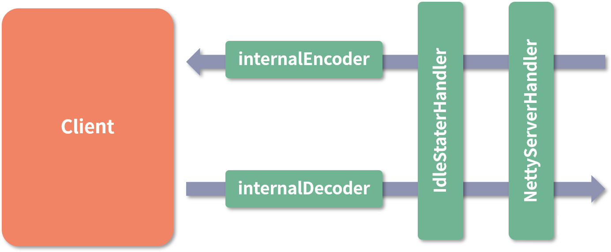
NettyClientHandler 的实现方法与上一章介绍的 NettyServerHandler 类似，同样是实现了 Netty 中的
ChannelDuplexHandler，内部会将所有方法委托给与 NettyClient 关联的 ChannelHandler 对象进行处理。
AbstractServer、AbstractClient 以及 Channel 实现，都是通过 AbstractPeer 实现了 ChannelHandler 接口，但只是做了一层简单的委托，将全部方法委托给了其底层关联的 ChannelHandler 对象。
ChannelHandler的类继承结构如下图：
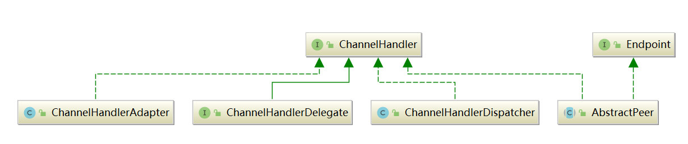
ChannelHandlerDispatcher： 它负责将多个 ChannelHandler 对象聚合在一起；
ChannelHandlerAdapter： 是一个适配器类，实现了ChannelHandler接口的所有方法，但都是空实现；
ChannelHandlerDelegate： 是对另一个 ChannelHandler 对象的封装，它的两个实现类 AbstractChannelHandlerDelegate 和 WrappedChannelHandler 中也仅仅是在内部封装了另一个 ChannelHandler 对象。
有两个实现类 AbstractChannelHandlerDelegate 和 WrappedChannelHandler 仅仅是在内部封装了另一个ChannelHandler对象。
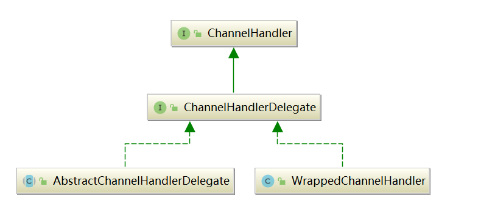
AbstractChannelHandlerDelegate：本质是装饰器模式的应用，它在内部的 ChannelHandler 的基础上添加了一些增强功能，有三个实现类：
DecodeHandler：专门处理 Decodeable 的 ChannelHandler 实现。实现了 Decodeable 接口的类都会覆写 decode() 方法实现对自身的解码，DecodeHandler.received() 方法就是通过该方法得到解码后的消息，然后传递给底层的 ChannelHandler 对象继续处理。
HeartbeatHandler：专门处理心跳消息的 ChannelHandler 实现。HeartbeatHandler.received() 方法接收心跳请求时，会生成相应的心跳响应并返回；在收到心跳响应时，会打印相应的日志；在收到其他类型的消息时，会传递给底层的 ChannelHandler 对象进行处理；
MultiMessageHandler：专门处理 MultiMessage 的 ChannelHandler 实现。MultiMessage 是 Exchange 层的一种消息类型，它内部封装了多个消息。MultiMessageHandler 收到 MultiMessage 消息时，会遍历其中的所有消息，并交给底层的 ChannelHandler 对象进行处理。
WrappedChannelHandler：子类决定了 Dubbo 以何种 线程模型 处理收到的事件和消息，就是所谓的 消息派发机制 。
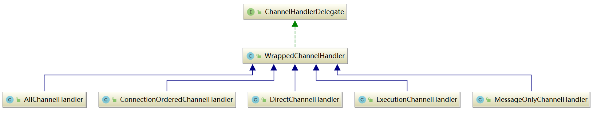
这些实现类，每一个都对应一个 Dispatcher 实现类：
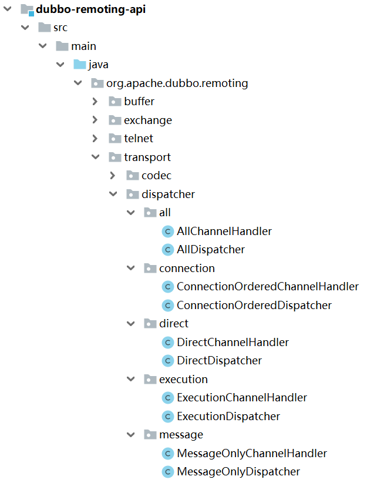
AllChannelHandler：将所有网络事件以及消息交给关联的线程池进行处理；
DirectChannelHandler：将所有的消息和网络事件交给 IO 线程处理；
MessageOnlyChannelHandler：将所有消息提交到线程池处理，而网络事件则由 IO 线程直接处理；
ConnectionOrderedChannelHandler ：将所有消息交给线程池处理，对于连接建立和断开事件，则会提交到一个独立的线程池中排队处理。
Dispatcher接口定义可以看到这是一个 SPI 扩展点接口，默认实现是AllDispatcher：
71(AllDispatcher.NAME)2public interface Dispatcher {3({Constants.DISPATCHER_KEY, "dispather", "channel.handler"})5ChannelHandler dispatch(ChannelHandler handler, URL url);6}AllDispatcher： 创建的是 AllChannelHandler 对象 ，它会将所有网络事件以及消息交给关联的线程池进行处理。AllChannelHandler覆盖了 WrappedChannelHandler 中除了 sent() 方法之外的其它网络事件处理方法，将调用内部 ChannelHandler 的逻辑放到线程池中执行。以
connected()方法和receive()方法为例：341// AllChannelHandler.java2public class AllChannelHandler extends WrappedChannelHandler {3public void connected(Channel channel) throws RemotingException {6// 按照当前端点（Server/Client）的 URL 从 ExecutorRepository 中获取相应的公共线程池7ExecutorService executor = getExecutorService();8try {9// 将CONNECTED事件的处理封装成ChannelEventRunnable提交到线程池中执行10executor.execute(new ChannelEventRunnable(channel, handler, ChannelState.CONNECTED));11} catch (Throwable t) {12throw new ExecutionException("connect event", channel, getClass() + " error when process connected event .", t);13}14}15public void received(Channel channel, Object message) throws RemotingException {18// 获取线程池19ExecutorService executor = getPreferredExecutorService(message);20try {21// 将消息封装成ChannelEventRunnable任务，提交到线程池中执行22executor.execute(new ChannelEventRunnable(channel, handler, ChannelState.RECEIVED, message));23} catch (Throwable t) {24// 如果线程池满了，请求会被拒绝25// 根据请求配置决定是否返回一个说明性的响应26if(message instanceof Request && t instanceof RejectedExecutionException){27sendFeedback(channel, (Request) message, t); return;28}29throw new ExecutionException(message, channel, getClass()31+ " error when process received event .", t);32}33}34}注意：AllChannelHandler 并没有覆盖父类的 sent() 方法，也就是说，发送消息是直接在当前线程调用 sent() 方法完成的。
ConnectionOrderedDispatcher： 创建的是 ConnectionOrderedChannelHandler 对象 ， 它会将所有消息交给线程池处理，对于连接建立和断开事件，则会提交到一个独立的线程池中排队处理。在 ConnectionOrderedChannelHandler 的构造方法中，会初始化一个线程池，该线程池的队列长度是固定的：
211// ConnectionOrderedChannelHandler.java2public class ConnectionOrderedChannelHandler extends WrappedChannelHandler {3protected final ThreadPoolExecutor connectionExecutor;4private final int queuewarninglimit;5public ConnectionOrderedChannelHandler(ChannelHandler handler, URL url) {7super(handler, url);8String threadName = url.getParameter(THREAD_NAME_KEY, DEFAULT_THREAD_NAME);9// 该线程池只有一个线程，队列的长度也是固定的，由URL中的connect.queue.capacity参数指定11connectionExecutor = new ThreadPoolExecutor(1, 1, 0L, TimeUnit.MILLISECONDS,12new LinkedBlockingQueue<Runnable>(13url.getPositiveParameter(CONNECT_QUEUE_CAPACITY, Integer.MAX_VALUE)),14new NamedThreadFactory(threadName, true),15new AbortPolicyWithReport(threadName, url)16);17// FIXME There's no place to release connectionExecutor!18queuewarninglimit = url.getParameter(CONNECT_QUEUE_WARNING_SIZE, DEFAULT_CONNECT_QUEUE_WARNING_SIZE);19}20//...21}
在 ConnectionOrderedChannelHandler 的 connected() 方法和 disconnected() 方法实现中，会将连接建立和断开事件交给上述
connectionExecutor线程池排队处理：331// ConnectionOrderedChannelHandler.java2public void connected(Channel channel) throws RemotingException {4try {5checkQueueLength();6connectionExecutor.execute(7new ChannelEventRunnable(channel, handler, ChannelState.CONNECTED));8} catch (Throwable t) {9throw new ExecutionException("connect event", channel, getClass()10+ " error when process connected event .", t);11}12}13public void disconnected(Channel channel) throws RemotingException {16try {17checkQueueLength(); connectionExecutor.execute(18new ChannelEventRunnable(channel, handler, ChannelState.DISCONNECTED));19} catch (Throwable t) {20throw new ExecutionException("disconnected event", channel, getClass()21+ " error when process disconnected event .", t);22}23}24private void checkQueueLength() {26// 检查队列容量27if (connectionExecutor.getQueue().size() > queuewarninglimit) {28logger.warn(new IllegalThreadStateException("connectionordered channel handler `queue size: "29+ connectionExecutor.getQueue().size()30+ " exceed the warning limit number :"31+ queuewarninglimit));32}33}
ThreadlessExecutor：在介绍 WrappedChannelHandler 各个实现的时候，我们会看到其中有针对 ThreadlessExecutor 这种线程池类型的特殊处理，例如，ExecutionChannelHandler.received() 方法中就有如下的分支逻辑：
251// ExecutionChannelHandler.java 2public class ExecutionChannelHandler extends WrappedChannelHandler { 3 4 public void received(Channel channel, Object message) throws RemotingException { 5 // 获取线程池（请求绑定的线程池或是公共线程池） 6 ExecutorService executor = getPreferredExecutorService(message); 7 // 请求消息直接提交给线程池处理 8 if (message instanceof Request) { 9 try { 10 executor.execute(11 new ChannelEventRunnable(channel, handler, ChannelState.RECEIVED, message)); 12 } catch (Throwable t) { 13 //... 14 } 15 } 16 17 // 针对ThreadlessExecutor这种线程池类型的特殊处理 18 else if (executor instanceof ThreadlessExecutor) { 19 executor.execute(20 new ChannelEventRunnable(channel, handler, ChannelState.RECEIVED, message)); 21 } else { 22 handler.received(channel, message); 23 } 24 } 25}
ThreadlessExecutor出现的缘由：ThreadlessExecutor 是一种特殊类型的线程池，与其他正常的线程池最主要的区别是： ThreadlessExecutor 内部不管理任何线程 。
我们可以调用 ThreadlessExecutor 的execute() 方法，将任务提交给这个线程池，但是这些提交的任务不会被调度到任何线程执行，而是存储在阻塞队列中，只有当其他线程调用 ThreadlessExecutor.waitAndDrain() 方法时才会真正执行。也说就是，执行任务的与调用 waitAndDrain() 方法的是同一个线程。
思考：那为什么会有 ThreadlessExecutor 这个实现呢？
回答：这主要是因为在
Dubbo 2.7.5版本之前，没有 ExecutorRepository 的概念，不会根据 URL 复用同一个线程池，而是通过 SPI 找到 ThreadPool 实现并创建新线程池，也就是说会为每个连接启动一个线程池。当面临需要消费大量服务且并发数比较大的场景时，例如，网关类场景，可能会导致 Consumer 端线程个数不断增加，导致线程调度消耗过多 CPU ，也可能因为线程创建过多而导致 OOM。为了解决上述问题，Dubbo 在 2.7.5 版本之后， 引入了 ThreadlessExecutor ，线程模型如下图：
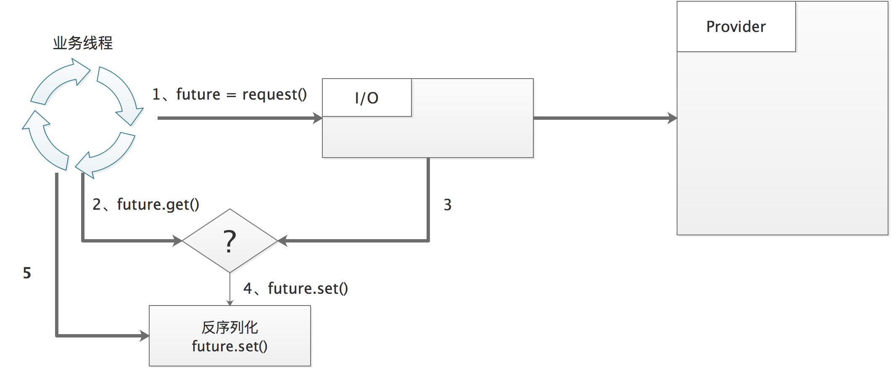
执行过程说明：
业务线程发出请求之后，拿到一个 Future 对象，然后调用
ThreadlessExecutor.waitAndDrain()方法，在阻塞队列上等待；当收到响应时，IO 线程会生成一个任务，并入队到 ThreadlessExecutor 队列中；
业务线程会将队列任务取出，并在本线程中执行，得到业务结果后，再调用 Future.set() 方法进行设置，然后 waitAndDrain() 方法返回；
最后，业务线程从 Future 中拿到结果值。
ThreadlessExecutor 的核心实现：
191public class ThreadlessExecutor extends AbstractExecutorService {2// 阻塞队列，用来在 IO 线程和业务线程之间传递任务3private final BlockingQueue<Runnable> queue = new LinkedBlockingQueue<>();4// 共享线程池，当业务线程已经不再等待响应时，会由该线程池执行提交的任务6private ExecutorService sharedExecutor;7// 指向请求对应的 DefaultFuture 对象9private CompletableFuture<?> waitingFuture;10// ThreadlessExecutor.waitAndDrain() 一般与一次 RPC 调用绑定，只会执行一次12// 当后续再次调用 waitAndDrain() 时，会检查 finished 字段，若为true，则此次调用直接返回13private boolean finished = false;14// 当后续再次调用 execute() 方法提交任务时，会根据 waiting 字段决定任务是放入 queue 队列等待业务线程执行，还是直接由 sharedExecutor 线程池执行16private volatile boolean waiting = true;17private final Object lock = new Object();19}
execute() 方法：
141// ThreadlessExecutor.java2public void execute(Runnable runnable) {5// 根据 waiting 状态决定任务提交到哪里6synchronized (lock) {7if (!waiting) {8sharedExecutor.execute(runnable);9} else {10queue.add(runnable);11}12}13}14waitAndDrain方法：
271// ThreadlessExecutor.java2public void waitAndDrain() throws InterruptedException {3if (finished) {4return;5}6// 从阻塞队列中获取任务8Runnable runnable = queue.take();9synchronized (lock) {10waiting = false;11// 同步执行任务12runnable.run();13}14// 如果阻塞队列中还有其他任务，也需要一并执行16runnable = queue.poll();17while (runnable != null) {18try {19runnable.run();20} catch (Throwable t) {21logger.info(t);22}24runnable = queue.poll();25}26finished = true;27}
Dubbo 将信息交换行为抽象成 Exchange 层，官方文档对这一层的说明是：封装了请求-响应的语义，即关注一问一答的交互模式，实现了同步转异步 。在 Exchange 这一子层，以 Request 和 Response 为中心，针对 Channel、ChannelHandler、Client、RemotingServer 等接口进行实现。
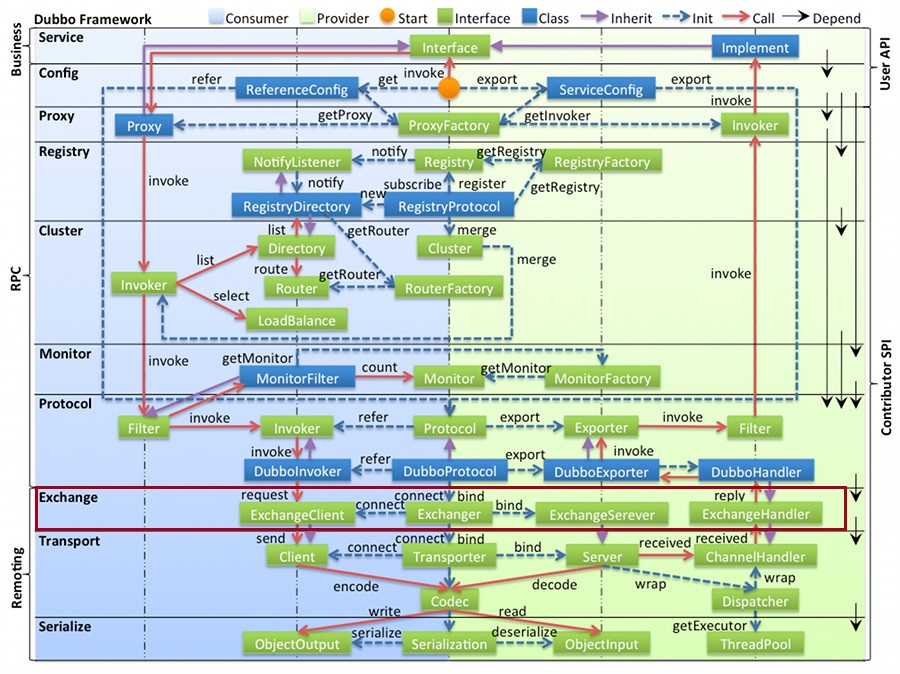
Exchange 子层的 Request 和 Response 是该层的核心对象，是对请求和响应的抽象。
Request定义在org.apache.dubbo.remoting.exchange，是对请求的抽象：
361public class Request {2
3 // 用于生成请求的自增ID，当递增到Long.MAX_VALUE之后，会溢出到Long.MIN_VALUE，可以继续使用该负数作为消息ID4 private static final AtomicLong INVOKE_ID = new AtomicLong(0);5
6 // 请求的ID7 private final long mId;8
9 // 请求版本号10 private String mVersion;11
12 // 双向请求标识，如果设置为true，则Server端收到请求后，需要给Client返回一个响应13 private boolean mTwoWay = true;14
15 // 事件标识，例如心跳请求、只读请求等，都会带有这个标识16 private boolean mEvent = false;17
18 // 请求发送到Server之后，由Decoder将二进制数据解码成Request对象，如果解码环节遇到异常，则会设置该标识19 private boolean mBroken = false;20
21 // 请求体，可以是任何Java类型的对象,也可以是null22 private Object mData;23
24 public Request() {25 mId = newId();26 }27
28 public Request(long id) {29 mId = id;30 }31
32 private static long newId() {33 return INVOKE_ID.getAndIncrement();34 }35 //...36} Response定义在org.apache.dubbo.remoting.exchange，是对响应的抽象：
331public class Response {2
3 // 响应ID，与相应请求的ID一致4 private long mId = 0;5
6 // 当前协议的版本号，与请求消息的版本号一致7 private String mVersion;8
9 // 响应状态码，有OK、CLIENT_TIMEOUT、SERVER_TIMEOUT等10多个可选值10 private byte mStatus = OK;11
12 // 事件标识13 private boolean mEvent = false;14
15 // 可读的错误响应消息16 private String mErrorMsg;17
18 // 响应体19 private Object mResult;20
21 public Response() {22 }23
24 public Response(long id) {25 mId = id;26 }27
28 public Response(long id, String version) {29 mId = id;30 mVersion = version;31 }32 //...33}在 Exchange 层中定义了 ExchangeChannel 接口，它在 Channel 接口之上抽象了 Exchange 层的网络连接：
231public interface ExchangeChannel extends Channel {2
3 /**4 * 发送请求5 */6 CompletableFuture<Object> request(Object request, ExecutorService executor) throws RemotingException;7
8 /**9 * 发送请求，可指定超时时间10 */11 CompletableFuture<Object> request(Object request, int timeout, ExecutorService executor) throws RemotingException;12
13 /**14 * 返回ExchangeHandler15 */16 ExchangeHandler getExchangeHandler();17
18 /**19 * 优雅关闭20 */21 22 void close(int timeout);23}HeaderExchangeChannel 是 ExchangeChannel 的实现类：
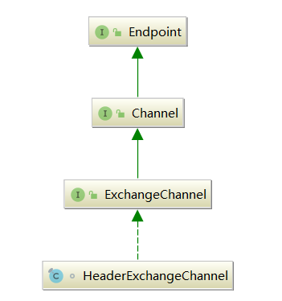
HeaderExchangeChannel 本身是 Channel 的装饰器，封装了一个 Channel 对象，它的 send() 方法和 request() 方法底层都是委托内部的Channel 对象实现的：
551// HeaderExchangeChannel.java2
3final class HeaderExchangeChannel implements ExchangeChannel {4
5 private final Channel channel;6
7 private volatile boolean closed = false;8
9 HeaderExchangeChannel(Channel channel) {10 if (channel == null) {11 throw new IllegalArgumentException("channel == null");12 }13 this.channel = channel;14 }15
16 17 public void send(Object message, boolean sent) throws RemotingException {18 if (closed) {19 throw new RemotingException(this.getLocalAddress(), null, "Failed to send message " + message + ", cause: The channel " + this + " is closed!");20 }21 if (message instanceof Request22 || message instanceof Response23 || message instanceof String) {24 channel.send(message, sent);25 } else {26 Request request = new Request();27 request.setVersion(Version.getProtocolVersion());28 request.setTwoWay(false);29 request.setData(message);30 channel.send(request, sent);31 }32 }33
34 35 public CompletableFuture<Object> request(Object request, int timeout, ExecutorService executor) throws RemotingException {36 if (closed) {37 throw new RemotingException(this.getLocalAddress(), null, "Failed to send request " + request + ", cause: The channel " + this + " is closed!");38 }39 // 创建请求40 Request req = new Request();41 req.setVersion(Version.getProtocolVersion());42 req.setTwoWay(true);43 req.setData(request);44 DefaultFuture future = DefaultFuture.newFuture(channel, req, timeout, executor);45 try {46 channel.send(req);47 } catch (RemotingException e) {48 future.cancel();49 throw e;50 }51 // 返回一个 DefaultFuture 对象52 return future;53 }54 //...55}注意：上述的
request()方法，首先创建一个Request请求，然后通过底层的Channel发送出去，最后返回的是一个DefaultFuture对象。
DefaultFuture 继承了 JDK 中的 CompletableFuture：
401public class DefaultFuture extends CompletableFuture<Object> {2
3 // 管理请求与 Channel 之间的关联关系，Key 为请求ID，Value 为发送请求的 Channel4 private static final Map<Long, Channel> CHANNELS = new ConcurrentHashMap<>();5
6 // 管理请求与 DefaultFuture 之间的关联关系，Key 为请求ID，Value 为请求对应的 Future7 private static final Map<Long, DefaultFuture> FUTURES = new ConcurrentHashMap<>();8
9 // 时间轮，用于处理超时10 public static final Timer TIME_OUT_TIMER = new HashedWheelTimer(11 new NamedThreadFactory("dubbo-future-timeout", true),12 30,13 TimeUnit.MILLISECONDS);14
15 // 请求的ID16 private final Long id;17
18 // 请求19 private final Request request;20
21 // 发送请求的 Channel22 private final Channel channel;23
24 // 整个请求-响应交互完成的超时时间25 private final int timeout;26
27 // 该 DefaultFuture 的创建时间28 private final long start = System.currentTimeMillis();29
30 // 请求发送的时间31 private volatile long sent;32
33 // 该定时任务到期时，表示对端响应超时34 private Timeout timeoutCheckTask;35
36 // 请求关联的线程池37 private ExecutorService executor;38
39 //...40}
看DefaultFuture对象的创建，是通过
DefaultFuture.newFuture()方法：151// DefaultFuture.java2public static DefaultFuture newFuture(Channel channel, Request request, int timeout, ExecutorService executor) {4final DefaultFuture future = new DefaultFuture(channel, request, timeout);5future.setExecutor(executor);6// 对于ThreadlessExecutor的特殊处理8// ThreadlessExecutor可以关联一个waitingFuture，就是这里创建DefaultFuture对象9if (executor instanceof ThreadlessExecutor) {10((ThreadlessExecutor) executor).setWaitingFuture(future);11}12// 创建一个定时任务，用处理响应超时的情况13timeoutCheck(future);14return future;15}HeaderExchangeChannel在发送请求的过程中，会触发沿途的 ChannelHandler.sent() 方法。其中的 HeaderExchangeHandler 会调用
DefaultFuture.sent()方法更新sent字段，记录请求发送的时间戳，后续如果响应超时，则会将该发送时间戳添加到提示信息中。当 Consumer 收到并读取对端返回的响应后，会触发 Dubbo Channel 中的各个 ChannelHandler 的 received() 方法。例如，AllChannelHandler 会将后续 ChannelHandler.received() 方法的调用封装成任务提交到线程池中，响应会提交到 DefaultFuture 关联的线程池中。
当响应传递到 HeaderExchangeHandler 时，会通过调用
HeaderExchangeHandler.handleResponse()方法进行处理，该方法内部调用了 DefaultFuture.received() 方法，会找到响应关联的 DefaultFuture 对象（根据请求ID 从FUTURES集合查找）并调用doReceived()方法，将 DefaultFuture 设置为完成状态。
received方法：
491// DefaultFuture.java2public static void received(Channel channel, Response response, boolean timeout) {4try {5// 拿到关联的Future6DefaultFuture future = FUTURES.remove(response.getId());7if (future != null) {8Timeout t = future.timeoutCheckTask;9// 未超时，取消定时任务10if (!timeout) {11t.cancel();12}13future.doReceived(response);14} else {15// 记录日志16}17} finally {18CHANNELS.remove(response.getId());19}20}21private void doReceived(Response res) {23if (res == null) {24throw new IllegalStateException("response cannot be null");25}26// 正常响应27if (res.getStatus() == Response.OK) {28this.complete(res.getResult());29}30// 超时31else if (res.getStatus() == Response.CLIENT_TIMEOUT32|| res.getStatus() == Response.SERVER_TIMEOUT) {33this.completeExceptionally(new TimeoutException(res.getStatus() == Response.SERVER_TIMEOUT, channel, res.getErrorMessage()));34}35// 其他异常36else {37this.completeExceptionally(new RemotingException(channel, res.getErrorMessage()));38}39// 针对ThreadlessExecutor的兜底处理，防止业务线程一直阻塞在ThreadlessExecutor上41if (executor != null && executor instanceof ThreadlessExecutor) {42ThreadlessExecutor threadlessExecutor = (ThreadlessExecutor) executor;43if (threadlessExecutor.isWaiting()) {44// notifyReturn()方法会向ThreadlessExecutor提交一个任务45// 这样业务线程就不会阻塞了，提交的任务会尝试将DefaultFuture设置为异常结束46threadlessExecutor.notifyReturn(new IllegalStateException("The result has returned, but the biz thread is still waiting" + " which is not an expected state, interrupt the thread manually by returning an exception."));47}48}49}
再来看响应超时的场景。在创建 DefaultFuture 时调用的
timeoutCheck()方法中，会创建 TimeoutCheckTask 定时任务，并添加到时间轮中：71// DefaultFuture.java2private static void timeoutCheck(DefaultFuture future) {4TimeoutCheckTask task = new TimeoutCheckTask(future.getId());5// 所有 DefaultFuture 对象共用一个TIME_OUT_TIMER时间轮6future.timeoutCheckTask = TIME_OUT_TIMER.newTimeout(task, future.getTimeout(), TimeUnit.MILLISECONDS);7}
TimeoutCheckTask 是 DefaultFuture 中的内部类，实现了 TimerTask 接口，可以提交到时间轮中等待执行。当响应超时的时候，TimeoutCheckTask 会创建一个 Response，并调用
DefaultFuture.received()方法：351// TimeoutCheckTask.java2private static class TimeoutCheckTask implements TimerTask {4private final Long requestID;6TimeoutCheckTask(Long requestID) {8this.requestID = requestID;9}10public void run(Timeout timeout) {13// 检查该任务关联的DefaultFuture对象是否已经完成14DefaultFuture future = DefaultFuture.getFuture(requestID);15if (future == null || future.isDone()) {16return;17}18// 提交到线程池执行，注意ThreadlessExecutor的情况20if (future.getExecutor() != null) {21future.getExecutor().execute(() -> notifyTimeout(future));22} else {23notifyTimeout(future);24}25}26private void notifyTimeout(DefaultFuture future) {28// 没有收到对端的响应，这里会创建一个Response，表示超时的响应29Response timeoutResponse = new Response(future.getId());30timeoutResponse.setStatus(future.isSent() ? Response.SERVER_TIMEOUT : Response.CLIENT_TIMEOUT);31timeoutResponse.setErrorMessage(future.getTimeoutMessage(true));32// 将关联的DefaultFuture标记为超时异常完成33DefaultFuture.received(future.getChannel(), timeoutResponse, true);34}35}
无论是发送请求还是处理响应，都会涉及HeaderExchangeHandler， HeaderExchangeHandler 是 ExchangeHandler 的装饰器 ，内部维护了一个 ExchangeHandler 对象。
ExchangeHandler 接口是 Exchange 层与上层交互的接口之一：
上层调用方可以实现该接口完成自身的功能，然后再由 HeaderExchangeHandler 修饰，具备 Exchange 层处理 Request-Response 的能力；
最后再由 Transport层的 ChannelHandler 修饰，具备 Transport 层的能力。如下图所示：
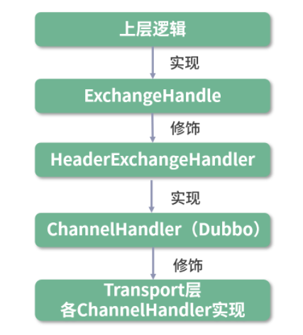
HeaderExchangeHandler 作为一个装饰器，其 connected()、disconnected()、sent()、received()、caught() 方法最终都会转发给上层提供的 ExchangeHandler 进行处理。这里我们需要聚焦的是 HeaderExchangeHandler 本身对 Request 和 Response 的处理逻辑。
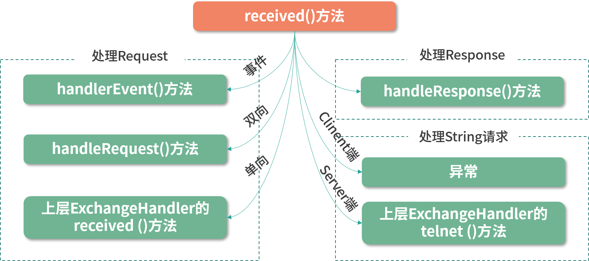
我们可以看到在received() 方法中，HeaderExchangeHandler 对收到的消息进行了分类处理：
只读请求：由 handlerEvent() 方法 进行处理，它会在 Channel 上设置 channel.readonly 标志，后续的上层调用中会读取该值；
双向请求：由 handleRequest() 方法 进行处理，先对解码失败的请求进行处理，返回异常响应。然后将正常解码的请求交给上层实现的 ExchangeHandler 进行处理，并添加回调。上层 ExchangeHandler 处理完请求后，会触发回调，根据处理结果填充响应结果和响应码，并向对端发送；
单向请求：直接委托给 上层 ExchangeHandler.received() 方法 进行处理，由于不需要响应，HeaderExchangeHandler 不会关注处理结果；
Response： HeaderExchangeHandler 会通过 handleResponse() 方法 将关联的 DefaultFuture 设置为完成状态（或是异常完成状态）；
String 类型消息：HeaderExchangeHandler 会根据当前服务的角色进行分类，具体与 Dubbo 对 telnet 的支持相关，后面的章节我会详细介绍。
HeaderExchangeHandler.sent()方法，会通知上层 ExchangeHandler 实现的 sent() 方法，同时还会针对 Request 请求调用 DefaultFuture.sent() 方法记录请求的具体发送时间。
HeaderExchangeHandler.connected()方法，会为 Dubbo Channel 创建相应的 HeaderExchangeChannel，并将两者绑定，然后通知上层 ExchangeHandler 处理 connect 事件。
HeaderExchangeHandler.disconnected()方法，会首先通知上层 ExchangeHandler 进行处理，之后在 DefaultFuture.closeChannel() 通知 DefaultFuture 连接断开（其实就是创建并传递一个 Response，该 Response 的状态码为 CHANNEL_INACTIVE），这样就不会继续阻塞业务线程了，最后再将 HeaderExchangeChannel 与底层的 Dubbo Channel 解绑。
HeaderExchangeClient 是 Client 的装饰器，主要为其装饰的 Client 添加两个功能：
维持与 Server 的长连接，通过 定时发送心跳消息 实现；
故障掉线之后进行重连，通过 定时检查连接状态 实现。
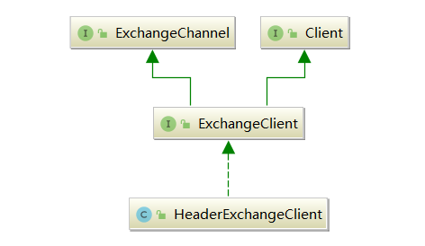
HeaderExchangeClient 中有两个核心字段client和channel，都是底层被装饰的对象：
311// HeaderExchangeClient.java2
3public class HeaderExchangeClient implements ExchangeClient {4
5 // 被修饰的Client对象。HeaderExchangeClien中对Client接口的实现，都会委托给该对象进行处理6 private final Client client;7
8 // 被修饰的ExchangeChannel对象，代表了Client与服务端的连接9 // HeaderExchangeClient 中对 ExchangeChannel 接口的实现，都会委托给该对象进行处理。10 private final ExchangeChannel channel;11
12 // 时间轮13 private static final HashedWheelTimer IDLE_CHECK_TIMER = new HashedWheelTimer(14 new NamedThreadFactory("dubbo-client-idleCheck", true), 1, TimeUnit.SECONDS, TICKS_PER_WHEEL);15 // 心跳16 private HeartbeatTimerTask heartBeatTimerTask;17 // 重连18 private ReconnectTimerTask reconnectTimerTask;19
20 public HeaderExchangeClient(Client client, boolean startTimer) {21 Assert.notNull(client, "Client can't be null");22 this.client = client;23 this.channel = new HeaderExchangeChannel(client);24 // 如果启动定时任务25 if (startTimer) {26 URL url = client.getUrl();27 startReconnectTask(url);28 startHeartBeatTask(url);29 }30 }31} HeaderExchangeClient 侧重定时轮资源的分配、定时任务的创建和取消。我们来看startReconnectTask和startHeartBeatTask这两个方法。
startReconnectTask：HeaderExchangeClient.startReconnectTask()方法，启动一个断线重连定时任务。
171// HeaderExchangeClient.java2
3private void startReconnectTask(URL url) {4 // 解析URL参数，判断是否需要断线重连5 if (shouldReconnect(url)) {6 AbstractTimerTask.ChannelProvider cp = () -> Collections.singletonList(HeaderExchangeClient.this);7
8 // 解析参数中的断线时长9 int idleTimeout = getIdleTimeout(url);10 // 计算检测间隔11 long heartbeatTimeoutTick = calculateLeastDuration(idleTimeout);12
13 // 创建断线重连定时任务，并提交到时间轮14 this.reconnectTimerTask = new ReconnectTimerTask(cp, heartbeatTimeoutTick, idleTimeout);15 IDLE_CHECK_TIMER.newTimeout(reconnectTimerTask, heartbeatTimeoutTick, TimeUnit.MILLISECONDS);16 }17}startHeartBeatTask：HeaderExchangeClient.startHeartBeatTask()方法，启动一个心跳定时任务。
161// HeaderExchangeClient.java2
3private void startHeartBeatTask(URL url) {4 // Client的具体实现决定是否启动该心跳任务5 if (!client.canHandleIdle()) { // 返回true表示该Client实现可以自己发送心跳请求，无须再启动一个定时任务6 AbstractTimerTask.ChannelProvider cp = () -> Collections.singletonList(HeaderExchangeClient.this);7
8 // 计算心跳间隔，不能低于1s9 int heartbeat = getHeartbeat(url);10 long heartbeatTick = calculateLeastDuration(heartbeat);11
12 // 创建心跳任务，提交到时间轮13 this.heartBeatTimerTask = new HeartbeatTimerTask(cp, heartbeatTick, heartbeat);14 IDLE_CHECK_TIMER.newTimeout(heartBeatTimerTask, heartbeatTick, TimeUnit.MILLISECONDS);15 }16}HeartbeatTimerTask 心跳定时任务的类继承图如下：
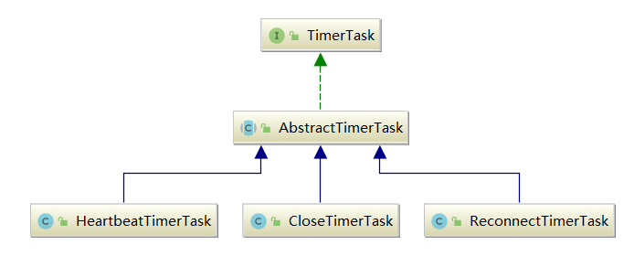
AbstractTimerTask：
171// AbstractTimerTask.java2public abstract class AbstractTimerTask implements TimerTask {4// ChannelProvider是AbstractTimerTask中定义的内部接口，定时任务会从该对象中获取Channel6private final ChannelProvider channelProvider;7// 任务的过期时间9private final Long tick;10// 任务是否已取消12protected volatile boolean cancel = false;13interface ChannelProvider {15Collection<Channel> getChannels();16}17}AbstractTimerTask 实现了 TimerTask 接口的
run()方法：
首先，从 ChannelProvider 中获取此次任务相关的 Channel 集合（在 Client 端只有一个 Channel，在 Server 端有多个 Channel）；
然后，检查各个 Channel 的状态，针对未关闭的 Channel 执行
doTask()方法处理；最后，通过
reput()方法将当前任务重新加入时间轮中，等待再次到期执行。181// AbstractTimerTask.java2public void run(Timeout timeout) throws Exception {5// 1.从 ChannelProvider 中获取此次任务相关的 Channel 集合6Collection<Channel> c = channelProvider.getChannels();7// 2.遍历Channel处理9for (Channel channel : c) {10if (channel.isClosed()) {11continue;12}13// 抽象方法，对于未关闭的Channel执行任务14doTask(channel);15}16// 3.将当前任务重新加入时间轮，以达到周期执行的效果17reput(timeout, tick);18}doTask：是 AbstractTimerTask 留给子类实现的抽象方法，不同的定时任务执行不同的操作。例如，HeartbeatTimerTask.doTask() 会计算当前时间与最后一次读写时间之间的间隔，如果大于心跳间隔，就会发送一个心跳请求，核心实现如下：
221// HeartbeatTimerTask.java2protected void doTask(Channel channel) {4try {5// 获取最后一次读写时间6Long lastRead = lastRead(channel);7Long lastWrite = lastWrite(channel);8// 最后一次读写时间超过心跳时间，就会发送心跳请求10if ((lastRead != null && now() - lastRead > heartbeat)11|| (lastWrite != null && now() - lastWrite > heartbeat)) {12// 发送一个心跳请求13Request req = new Request();14req.setVersion(Version.getProtocolVersion());15req.setTwoWay(true);16req.setEvent(HEARTBEAT_EVENT);17channel.send(req);18}19} catch (Throwable t) {20logger.warn("Exception when heartbeat to remote channel " + channel.getRemoteAddress(), t);21}22}
HeaderExchangeServer 是 RemotingServer 的装饰器，实现自 RemotingServer 接口的大部分方法都委托给了内部所装饰的 RemotingServer 对象。HeaderExchangeServer 主要为其装饰的 RemotingServer 提供定期关闭空闲长连接的功能：
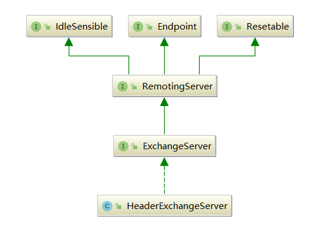
HeaderExchangeServer的核心字段包含了一个时间轮以及装饰的RemotingServer：
231// HeaderExchangeServer.java2
3public class HeaderExchangeServer implements ExchangeServer {4 // 装饰的RemotingServer，HeaderExchangeServer中对RemotingServer接口的实现，都会委托给该对象进行处理5 private final RemotingServer server;6
7 // Server的关闭状态8 private AtomicBoolean closed = new AtomicBoolean(false);9
10 // 时间轮11 private static final HashedWheelTimer IDLE_CHECK_TIMER = new HashedWheelTimer(new NamedThreadFactory("dubbo-server-idleCheck", true), 1,12 TimeUnit.SECONDS, TICKS_PER_WHEEL);13
14 // 关闭空闲长连接的定时任务15 private CloseTimerTask closeTimerTask;16
17 public HeaderExchangeServer(RemotingServer server) {18 Assert.notNull(server, "server == null");19 this.server = server;20 // 启动一个空闲长连接检测定时任务21 startIdleCheckTask(getUrl());22 }23} 在 HeaderExchangeServer 的构造方法中，startIdleCheckTask()方法会启动一个 CloseTimerTask 定时任务，定期关闭长时间空闲的连接：
171// HeaderExchangeServer.java2
3private void startIdleCheckTask(URL url) {4 // RemotingServer的具体实现决定是否启动该任务5 if (!server.canHandleIdle()) {6 AbstractTimerTask.ChannelProvider cp = () -> unmodifiableCollection(HeaderExchangeServer.this.getChannels());7 // 空闲时间8 int idleTimeout = getIdleTimeout(url);9 // 检测周期10 long idleTimeoutTick = calculateLeastDuration(idleTimeout);11 // 创建任务12 CloseTimerTask closeTimerTask = new CloseTimerTask(cp, idleTimeoutTick, idleTimeout);13 this.closeTimerTask = closeTimerTask;14 // 提交到时间轮15 IDLE_CHECK_TIMER.newTimeout(closeTimerTask, idleTimeoutTick, TimeUnit.MILLISECONDS);16 }17}我们再来看看HeaderExchangeServer的关闭流程。HeaderExchangeServer.close() 方法的核心逻辑如下：
首先，将底层被装饰的 RemotingServer 的closing字段设置为true，表示这个 Server 端正在关闭，不再接受新连接；
向 Client 发送一个携带 ReadOnly 事件的请求（根据 URL 中的配置决定是否发送，默认为发送）。Client 端收到该请求后，会在 Channel 上添加 Key 为 channel.readonly 的附加信息，上层调用方会根据该附加信息，判断该连接是否可写；
循环检测是否还存在 Client 与当前 Server 维持着长连接，直至全部 Client 断开连接或超时；
更新HeaderExchangeServer的closed 字段为 true，之后 Client 不会再发送任何请求或回复响应；
取消 CloseTimerTask 定时任务；
调用底层修饰的 RemotingServer 对象的 close() 方法。以 NettyServer 为例，其 close() 方法会关闭Channel，并关闭 bossGroup 和 workerGroup 两个线程池。
281// HeaderExchangeServer.java2
3public void close(final int timeout) {5 // 1.将底层RemotingServer的closing字段设置为true，表示当前Server正在关闭，不再接收连接6 startClose();7 if (timeout > 0) {8 final long max = (long) timeout;9 final long start = System.currentTimeMillis();10 // 向 Client 发送一个携带 ReadOnly 事件的请求11 if (getUrl().getParameter(Constants.CHANNEL_SEND_READONLYEVENT_KEY, true)) {12 sendChannelReadOnlyEvent();13 }14 // 循环检测是否还存在与Client的连接15 while (HeaderExchangeServer.this.isRunning()16 && System.currentTimeMillis() - start < max) {17 try {18 Thread.sleep(10);19 } catch (InterruptedException e) {20 logger.warn(e.getMessage(), e);21 }22 }23 }24 // 取消 CloseTimerTask 定时任务25 doClose();26 // 调用底层修饰的 RemotingServer 对象的 close() 方法27 server.close(timeout);28}对于Exchange子层的上层来说，Exchange 层的入口是 Exchangers 这个门面类，其中提供了多个 bind() 以及 connect() 方法的重载，这些重载方法最终会通过 SPI 机制，获取 Exchanger 接口的扩展实现，这个流程与Transport 层的入口—— Transporters 门面类相同。
我们可以看到 Exchanger 接口的定义与前面介绍的 Transporter 接口非常类似，同样是被 @SPI 接口修饰（默认扩展名为“header”，对应的是 HeaderExchanger 这个实现）：
91(HeaderExchanger.NAME)2public interface Exchanger {3
4 ({Constants.EXCHANGER_KEY})5 ExchangeServer bind(URL url, ExchangeHandler handler) throws RemotingException;6
7 ({Constants.EXCHANGER_KEY})8 ExchangeClient connect(URL url, ExchangeHandler handler) throws RemotingException;9}Exchanger 的 bind() 方法和 connect() 方法被 @Adaptive 注解修饰，可以通过 URL 中的
exchanger参数值指定扩展名称来覆盖默认值。Dubbo 只为 Exchanger 接口提供了 HeaderExchanger 这一个实现，其中 connect() 方法创建的是 HeaderExchangeClient 对象，bind() 方法创建的是 HeaderExchangeServer 对象：
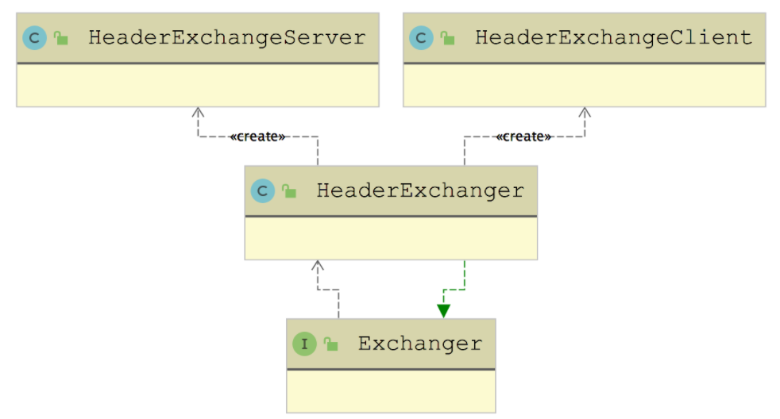
从 HeaderExchanger 的实现可以看到，它会在 Transport 层的 Client 和 Server 实现基础之上，添加HeaderExchangeClient 和 HeaderExchangeServer 装饰器。同时，为上层实现的 ExchangeHandler 实例添加了 HeaderExchangeHandler 以及 DecodeHandler 两个装饰器：
161// HeaderExchanger.java2public class HeaderExchanger implements Exchanger {4public static final String NAME = "header";6public ExchangeClient connect(URL url, ExchangeHandler handler) throws RemotingException {9return new HeaderExchangeClient(Transporters.connect(url, new DecodeHandler(new HeaderExchangeHandler(handler))), true);10}11public ExchangeServer bind(URL url, ExchangeHandler handler) throws RemotingException {14return new HeaderExchangeServer(Transporters.bind(url, new DecodeHandler(new HeaderExchangeHandler(handler))));15}16}